<!doctype html>
<html lang="en">
<head>
  <meta charset="utf-8">
  <meta name="viewport" content="width=device-width, initial-scale=1">
  <title>arxiv digest — 2026-06-17</title>
  <style>
:root {
  --bg: #ffffff;
  --fg: #1f2328;
  --muted: #59636e;
  --border: #d0d7de;
  --card: #f6f8fa;
  --link: #0969da;
}
body {
  max-width: 980px;
  margin: 0 auto;
  padding: 2rem 1rem 5rem;
  font-family: -apple-system, BlinkMacSystemFont, "Segoe UI", Helvetica, Arial, sans-serif;
  line-height: 1.55;
  color: var(--fg);
  background: var(--bg);
}
a { color: var(--link); }
img { max-width: 100%; height: auto; }
pre, code { background: var(--card); border-radius: 6px; }
pre { padding: 1rem; overflow-x: auto; }
blockquote { border-left: 4px solid var(--border); padding-left: 1rem; color: var(--muted); }
details { margin: 0.6rem 0; }
summary { cursor: pointer; font-weight: 600; }
.paper-figures-scroll {
  display: flex;
  gap: 1rem;
  overflow-x: auto;
  overscroll-behavior-x: contain;
  padding: 0.75rem 0.25rem 1rem;
  margin: 1rem 0 1.25rem;
  border-top: 1px solid var(--border);
  border-bottom: 1px solid var(--border);
  scroll-snap-type: x proximity;
}
.paper-figure-card {
  flex: 0 0 min(260px, 72vw);
  scroll-snap-align: start;
  background: var(--card);
  border: 1px solid var(--border);
  border-radius: 12px;
  padding: 0.55rem;
}
.paper-figure-card img {
  display: block;
  width: 100%;
  max-height: 240px;
  object-fit: contain;
  background: white;
  border-radius: 8px;
}
.paper-figure-caption {
  display: block;
  margin-top: 0.5rem;
  color: var(--muted);
  font-size: 0.85rem;
}
.figure-strip-hint {
  color: var(--muted);
  font-size: 0.9rem;
  margin-bottom: -0.3rem;
}
</style>
  <!-- MathJax: renders $...$ inline math and $$...$$ display math, plus
       \(...\) and \[...\]. Loaded from the official CDN; works offline
       once cached. Configured to skip code/pre blocks so arxiv IDs that
       look like dollar amounts don't get mangled. -->
  <script>
    window.MathJax = {
      tex: {
        inlineMath: [['$', '$'], ['\\(', '\\)']],
        displayMath: [['$$', '$$'], ['\\[', '\\]']],
        processEscapes: true,
        processEnvironments: true
      },
      options: {
        skipHtmlTags: ['script', 'noscript', 'style', 'textarea', 'pre', 'code'],
        ignoreHtmlClass: 'tex2jax_ignore',
        processHtmlClass: 'tex2jax_process'
      }
    };
  </script>
  <script id="MathJax-script" async
    src="https://cdn.jsdelivr.net/npm/mathjax@3/es5/tex-chtml.js"></script>
</head>
<body>
<header style="background-color: #333; color: white; padding: 15px; margin-bottom: 20px;">
  <h1 style="margin: 0; font-size: 24px;">
    <a href="https://ochelpan.github.io/arXiv_clean/" style="color: white; text-decoration: none;">Main</a>
  </h1>
</header>

<h1>Daily arXiv Report</h1>

<hr>
<p>
<a href="index.html">← Index</a>
 · <a href="papers_02.html">← Previous</a> · <a href="papers_04.html">Next →</a>
</p>
<hr>

<h2>Papers 41–60</h2>
<p><a id="paper-2606.17868"></a></p>
<h3 id="replica-theory-for-the-rate-functional-of-the-empirical-spectral-distribution-function-of-diluted-hermitian-matrices"><a href="http://arxiv.org/abs/2606.17868v1">Replica theory for the rate functional of the empirical spectral distribution function of diluted Hermitian matrices</a></h3>
<p><strong>Authors:</strong> Edgar Guzmán-González, Isaac Pérez Castillo<br>
<strong>Type:</strong> theory · <strong>Category:</strong> disordered systems and neural networks · <strong>PDF:</strong> <a href="https://arxiv.org/pdf/2606.17868v1">https://arxiv.org/pdf/2606.17868v1</a><br>
<strong>Analysis basis:</strong> full PDF text, analyzed in chunks
<strong>Topic relevance:</strong> <code>Keldysh / 2PI / non-Gaussian methods</code> <strong>3/5</strong> · <code>methods for driven-dissipative</code> <strong>2/5</strong> · <code>driven-dissipative phase transition</code> <strong>1/5</strong> · <code>exotic spin models in light-matter</code> <strong>1/5</strong> · <code>non-equilibrium dynamics</code> <strong>1/5</strong> · <code>non-equilibrium universality</code> <strong>1/5</strong></p>
<div class="figure-strip-hint">↔ Scroll figures horizontally</div>
<div class="paper-figures-scroll">
<figure class="paper-figure-card">
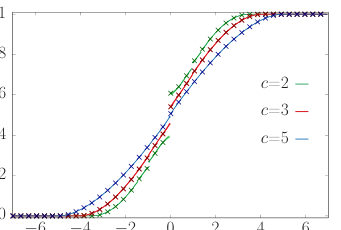
<figcaption class="paper-figure-caption"><b>Fig 1.</b> FIG. 1. Mean empirical spectral distribution function κ1(x) = ⟨iC(x)⟩for Erdős–Rényi adjacency matrices with mean con- nectivity c = 2, 3, 5. The solid curves are obtained from the population-dynamics solution of Eq. (13), while the markers are exact diagonalization results for N × N random matrices. The theoretical curves use the interval [−7, 7] discretized into 200 points, regularizer η = 10−4, a population of 104 func- tions, 103 updates, and 20 independent population-dynamics runs; the shaded bands show the corresponding run-to-run variability and are visible only for c = 2. The diagonaliza- tion markers are averages over 500 matrix realizations of size N = 5000.</figcaption>
</figure>
<figure class="paper-figure-card">
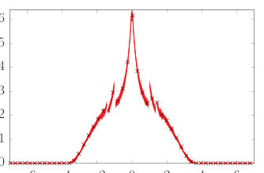
<figcaption class="paper-figure-caption"><b>Fig 2.</b> FIG. 2. Scaled connected covariance Nκ2(x, y) of the empir- ical spectral distribution function for Erdős–Rényi adjacency matrices with mean connectivity c = 2. The top panel shows a density plot of the theoretical population-dynamics result obtained from Eq. (13). The middle panel shows cuts at the dashed horizontal lines in the density plot, and the bottom panel shows the diagonal x = y. In the cuts, solid curves are the theoretical prediction and markers are exact diagonaliza- tion results. The population-dynamics parameters are the in- terval [−7, 7] discretized into 200 points, regularizer η = 10−4, population size 104, 103 updates, and 20 independent runs. Shaded bands in the line...</figcaption>
</figure>
<figure class="paper-figure-card">
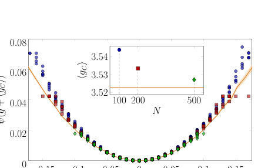
<figcaption class="paper-figure-caption"><b>Fig 3.</b> FIG. 3. Candidate rate function ψ for the Fourier projection gC = R a −a dx sin(πx/a)iC(x), with a = 7, for Erdős–Rényi adjacency matrices with mean connectivity c = 5. The solid curve is the replica-symmetric prediction. The horizontal co- ordinate is shifted by the mean, g = u −⟨gC⟩, so that the minimum is plotted at g = 0, and the normalization is chosen such that ψ(⟨gC⟩) = 0. The inset shows ⟨gC⟩as a function of N, with the solid horizontal line indicating the theoretical value. Exact diagonalization estimates use 4×104 samples for each system size and are repeated 5 times, producing the scat- ter points. The theoretical curve was obtained by discretizing the integrals into 80...</figcaption>
</figure>
</div>

<p><strong>Summary.</strong> This work applies advanced techniques from spin-glass theory (replica method) to calculate the rate functional governing fluctuations of the spectral distribution in sparse random matrices. By deriving explicit formulas for cumulants and comparing them against numerical data, the authors establish a powerful theoretical framework for analyzing spectral observables in complex disordered systems.</p>
<p><strong>Why it may be interesting.</strong> While focused on random matrices, the use of replica theory and large deviation principles is a powerful mathematical tool applicable to complex systems where mean-field approximations are necessary, providing rigorous statistical descriptions.</p>
<details>
<summary>Detailed structure</summary>
<p><strong>Main problem.</strong> The paper develops a replica-based framework to determine the rate functional for fluctuations of the empirical spectral distribution function ($i_C$) in diluted Hermitian random matrices.</p>
<p><strong>Main result.</strong> It derives explicit expressions for the first two cumulants and computes candidate rate functions ($\Psi[\zeta]$) for linear spectral statistics, showing good agreement with numerical diagonalization in the accessible fluctuation regime.</p>
<p><strong>Method.</strong> The core method involves using replica theory from spin-glass physics to calculate the scaled cumulant-generating functional ($F[\mu]$) via a replica-symmetric saddle-point approximation.</p>
<p><strong>Model / system.</strong> The system under study is diluted Hermitian random matrices, exemplified by the adjacency matrices of unweighted Erdős–Rényi random graphs with a mean degree $c$. The analysis focuses on spectral statistics derived from these matrices.</p>
<p><strong>Key observables.</strong> Empirical spectral distribution function ($i_C(x)$), cumulants ($\kappa_1, \kappa_2$), and the rate functional $\Psi[\zeta]$ for linear spectral statistics (e.g., Fourier coefficients).</p>
<p><strong>Important parameters / regimes.</strong> Mean degree $c$, system size $N$ (analyzed in the thermodynamic limit $N 	o \infty$).</p>
<p><strong>Assumptions / limitations.</strong> The analysis relies on the replica-symmetric saddle-point ansatz and assumes that a large-deviation principle holds for $i_C$.</p>
<p><strong>Figures summary.</strong> Figures compare theoretical predictions for $\kappa_1$, $N\kappa_2$, and the rate function $\psi$ against results from exact numerical diagonalization, demonstrating quantitative agreement.</p>
<p><strong>Paper structure.</strong> The paper builds up the formalism by first defining the generating functional using replicas, then deriving explicit formulas for cumulants via functional derivatives, and finally computing the rate function $\psi(u)$ through transformations relating it to the cumulant-generating functional $f(eta)$.</p>
</details>
<details>
<summary>Abstract</summary>
<p>We develop a replica-based framework for the scaled cumulant-generating functional of the empirical spectral distribution function $i_C$ of diluted Hermitian random matrices. Within a replica-symmetric saddle-point assumption, this construction yields a candidate rate functional for fluctuations of $i_C$. As an illustrative application, we consider adjacency matrices of unweighted Erdős-Rényi random graphs with mean degree $c$. We derive explicit expressions for the first two cumulants of $i_C$, indicate how higher cumulants can be obtained from further functional derivatives, and compute the rate function of Fourier coefficients, equivalently of selected linear spectral statistics. The replica-symmetric predictions are tested against exact numerical diagonalization and show good agreement in the accessible fluctuation regime. The approach provides a basis for studying rate functionals of spectral observables in sparse random matrix ensembles.</p>
</details>
<p><sub><a href="#top">↑ back to top</a></sub></p>

<p><a id="paper-2606.17252"></a></p>
<h3 id="stochastic-thermodynamics-of-score-matching-in-diffusion-models"><a href="http://arxiv.org/abs/2606.17252v1">Stochastic Thermodynamics of Score Matching in Diffusion Models</a></h3>
<p><strong>Authors:</strong> Xuehao Ding, H. T. Quan, Yuhai Tu<br>
<strong>Type:</strong> theory · <strong>Category:</strong> statistical mechanics · <strong>PDF:</strong> <a href="https://arxiv.org/pdf/2606.17252v1">https://arxiv.org/pdf/2606.17252v1</a><br>
<strong>Analysis basis:</strong> full PDF text, analyzed in chunks
<strong>Topic relevance:</strong> <code>non-equilibrium dynamics</code> <strong>3/5</strong> · <code>non-equilibrium universality</code> <strong>2/5</strong> · <code>Keldysh / 2PI / non-Gaussian methods</code> <strong>1/5</strong> · <code>correlated / nonlocal dissipation</code> <strong>1/5</strong> · <code>driven-dissipative phase transition</code> <strong>1/5</strong> · <code>methods for driven-dissipative</code> <strong>1/5</strong></p>
<div class="figure-strip-hint">↔ Scroll figures horizontally</div>
<div class="paper-figures-scroll">
<figure class="paper-figure-card">
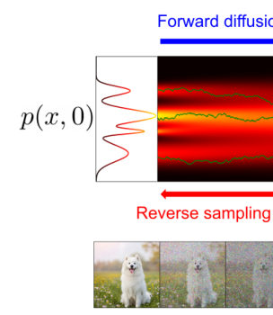
<figcaption class="paper-figure-caption"><b>Fig 1.</b> Fig. 1: Schematic of the diffusion model.</figcaption>
</figure>
<figure class="paper-figure-card">
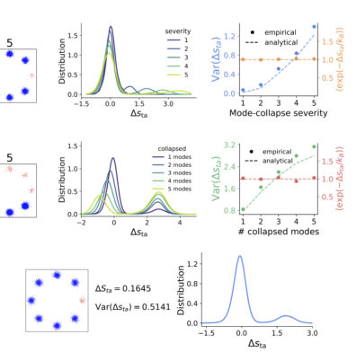
<figcaption class="paper-figure-caption"><b>Fig 2.</b> Fig. 2: Diffusion model on 2D Gaussian-mixture data. (a) Left: The first panel shows the target data distribution, eight Gaussians on a 2D ring with equal weights. The other panels show the distributions generated by five diffusion models with increas- ing collapse severity of a single mode (colored in red). Middle: Density of ∆sta for each mode-collapse severity. Right: Variance of TAEP increasing with the severity of mode collapse and numerical verification of the integral fluctuation theorem. Analyti- cal values from equations (40) and (30) are shown. (b) Similar to (a) but for increasing numbers of collapsed modes. (c) The distributions generated by two diffusion mod- els with similar...</figcaption>
</figure>
<figure class="paper-figure-card">
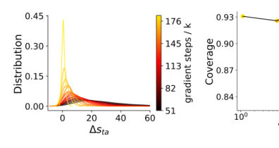
<figcaption class="paper-figure-caption"><b>Fig 3.</b> Fig. 3: Diffusion model on CIFAR-10. (a) The distribution of TAEP along the training process. (b) The coverage of the data manifold by generated samples increases as the variance of TAEP is reduced during the optimization process. (c) The variance of TAEP decreases along with the mean during the optimization process.</figcaption>
</figure>
<figure class="paper-figure-card">
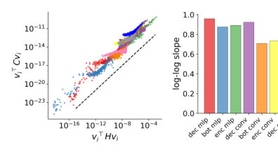
<figcaption class="paper-figure-caption"><b>Fig 4.</b> Fig. 4: Numerical results on the relationship between Hessian (loss curvature) and SGD noise covariance for diffusion model on CIFAR-10. We denote the Hessian matrix by H, the normalized top eigenvectors of H by vi, and the covariance matrix of SGD noise by C. (a) Eigenvalues of the Hessian versus Rayleigh quotients of the SGD noise covariance at the eigenvectors of the Hessian. Results for parameters in the MLP/con- volutional/attention/normalization layers in the decoder/bottleneck/encoder of the U-Net are plotted, with the color coding given in (b). A dashed line with log-log slope equal to 1 is shown for comparison. (b) Log-log slope of the SGD noise covariance v⊤ i Cvi versus the...</figcaption>
</figure>
</div>

<p><strong>Summary.</strong> This work establishes a stochastic thermodynamic framework for diffusion models by introducing the Time-asymmetry Entropy Production (TAEP). It proves that the average TAEP is proportional to the score-matching objective and obeys fluctuation theorems. This offers a deep, physical understanding of why these generative models achieve high sampling diversity.</p>
<p><strong>Why it may be interesting.</strong> It provides a rigorous physical interpretation of modern generative AI objectives using established tools from non-equilibrium statistical mechanics, linking machine learning loss functions directly to thermodynamic quantities like entropy production.</p>
<details>
<summary>Detailed structure</summary>
<p><strong>Main problem.</strong> To develop a stochastic thermodynamic framework for score-based diffusion models, relating their training objective to fundamental principles like entropy production.</p>
<p><strong>Main result.</strong> The average Time-asymmetry Entropy Production (TAEP) is exactly proportional to the score-matching objective, and TAEP obeys exact fluctuation theorems. This provides a thermodynamic explanation for the superior sampling diversity of diffusion models.</p>
<p><strong>Method.</strong> The authors introduce TAEP, a trajectory-dependent quantity derived from forward and reverse Langevin dynamics, and apply concepts from non-equilibrium statistical physics, including fluctuation theorems.</p>
<p><strong>Model / system.</strong> The system is score-based diffusion models, which model data generation via a forward diffusion process (data to noise) and a learned reverse sampling process. The analysis treats these processes as stochastic physical systems.</p>
<p><strong>Key observables.</strong> Time-asymmetry Entropy Production (TAEP), its fluctuations ($  ext{Var}(\Delta s_{ ext{ta}})$), and the ensemble average $\langle \Delta s_{	ext{ta}} 
angle$.</p>
<p><strong>Important parameters / regimes.</strong> The proportionality constant relating $\langle \Delta s_{	ext{ta}} 
angle$ to the score-matching objective, and the noise strength/curvature of the loss landscape.</p>
<p><strong>Assumptions / limitations.</strong> The analysis relies on interpreting diffusion models as stochastic physical systems and assumes sufficient network expressivity for the reverse process to approximate the true score function.</p>
<p><strong>Figures summary.</strong> Figures show TAEP distributions verifying fluctuation theorems, tracking data manifold coverage via $  ext{Var}(\Delta s_{ ext{ta}})$ during training, and demonstrating a positive correlation between SGD noise covariance and the loss landscape Hessian.</p>
<p><strong>Paper structure.</strong> The paper builds from defining the stochastic framework (Langevin equations) to deriving TAEP, proving it obeys fluctuation theorems, establishing its proportionality to the score-matching objective, and finally analyzing how fluctuations quantify sampling unevenness and guide optimization towards flatter minima.</p>
</details>
<details>
<summary>Abstract</summary>
<p>Score-based diffusion models are a powerful class of generative AI systems capable of sampling from complex, high-dimensional probability distributions. Their dynamics consist of a forward diffusion process that transforms data into noise and a learned reverse process that reconstructs data by reversing the probability flow. Here, we develop a stochastic thermodynamic framework for diffusion models and their score-matching objective. We introduce a trajectory-dependent quantity, time-asymmetry entropy production (TAEP), defined from the forward and reverse diffusion dynamics, and show that it obeys exact fluctuation theorems. Remarkably, Hyvärinen's implicit score-matching kernel emerges naturally as a fluctuating component of TAEP, while the average TAEP is exactly proportional to the score-matching objective. We further show that fluctuations of TAEP quantify sampling unevenness and provide a thermodynamic measure of data-manifold coverage. These results yield a quantitative explanation for the superior sampling diversity of diffusion models and reveal a thermodynamic mechanism by which stochastic gradient descent favors flatter, more generalizable solutions. By uncovering the entropic nature of score matching, our work establishes fundamental statistical-mechanical principles underlying diffusion-based generative AI.</p>
</details>
<p><sub><a href="#top">↑ back to top</a></sub></p>

<p><a id="paper-2606.17908"></a></p>
<h3 id="twin-beam-advantage-in-quantum-lidar-under-correlated-noise"><a href="http://arxiv.org/abs/2606.17908v1">Twin-beam advantage in quantum LiDAR under correlated noise</a></h3>
<p><strong>Authors:</strong> Valeria Cimini<br>
<strong>Type:</strong> theory · <strong>Category:</strong> other · <strong>PDF:</strong> <a href="https://arxiv.org/pdf/2606.17908v1">https://arxiv.org/pdf/2606.17908v1</a><br>
<strong>Analysis basis:</strong> full PDF text, analyzed in chunks
<strong>Topic relevance:</strong> <code>interference shaping light</code> <strong>3/5</strong> · <code>quantum optics experiment</code> <strong>3/5</strong> · <code>correlated / nonlocal dissipation</code> <strong>1/5</strong> · <code>entanglement &amp; information structure</code> <strong>1/5</strong> · <code>quantum measurements</code> <strong>1/5</strong></p>
<div class="figure-strip-hint">↔ Scroll figures horizontally</div>
<div class="paper-figures-scroll">
<figure class="paper-figure-card">
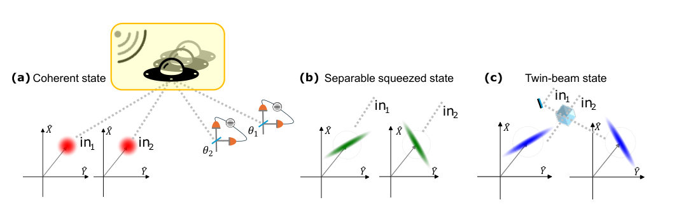
<figcaption class="paper-figure-caption"><b>Fig 1.</b> FIG. 1. LiDAR scheme for the joint estimation of target range and velocity in a noisy environment. The protocol is investigated for three two-mode (in1 and in2) probe families: (a) coherent states, (b) separable squeezed states, and (a) twin-beam states. After target interaction and propagation through the noisy channel, the two reflected modes are analyzed by homodyne detection. The local-oscillator phases θ1 and θ2 can be optimized depending on the considered configuration.</figcaption>
</figure>
<figure class="paper-figure-card">
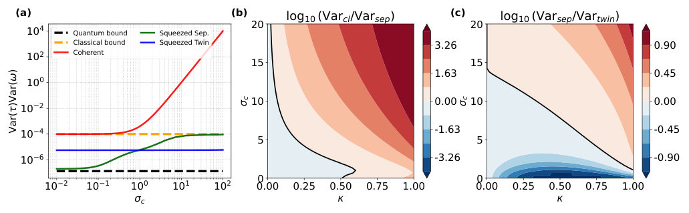
<figcaption class="paper-figure-caption"><b>Fig 2.</b> FIG. 2. (a) Joint range–velocity estimation performance against correlated noise strength σc at fixed probe energy N = 50 for nth = 0 and κ = 1 obtained from homodyne quadratures for coherent states (red), separable squeezed states (green), and twin-beam states (blue). The standard quantum limit for classical light is the orange dashed line (1/(4∆Ω2∆T 2N 2)), while the ultimate Heisenberg limit is the black dashed line ((1/(4∆Ω2∆T 2N 4))). (b) Comparison of coherent states versus separable squeezed states for different levels of loss and correlated jamming noise strength at fixed thermal background nth = 0.5. The panels report the logarithm of the ratio between the variance products...</figcaption>
</figure>
<figure class="paper-figure-card">
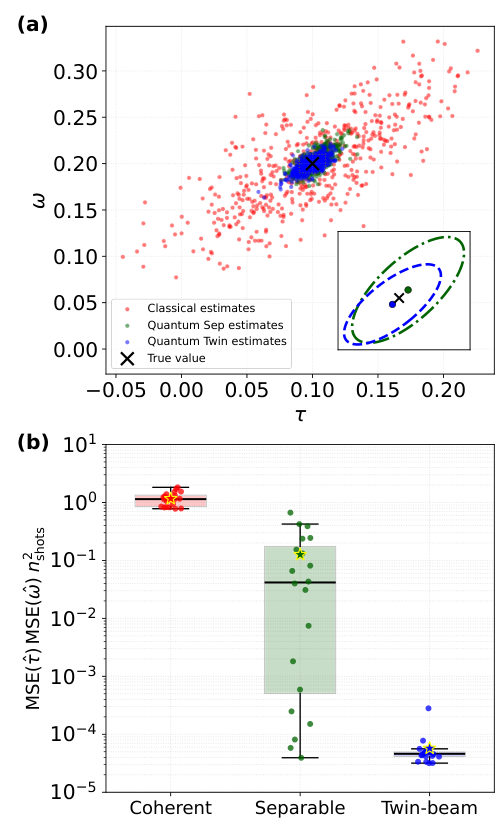
<figcaption class="paper-figure-caption"><b>Fig 3.</b> FIG. 3. Estimator-level reconstruction from homodyne data for the three probe classes at fixed total photon number N = 50, κ = 0.95, nth = 0, and σc = 5: coherent (red), separable squeezed (green), and twin-beam (blue). a Each point in the main panel corresponds to one independent maximum-likelihood estimate (ˆτ, ˆω) obtained from a simulated homodyne dataset of fixed size nshots = 100, generated for the same true operating point (τtrue, ωtrue) (black cross). The inset shows the corresponding covariance ellipses, centered at the sam- ple mean of each estimator distribution. Their area and orientation quantify the joint uncertainty and the residual correlation between the inferred range- and...</figcaption>
</figure>
<figure class="paper-figure-card">
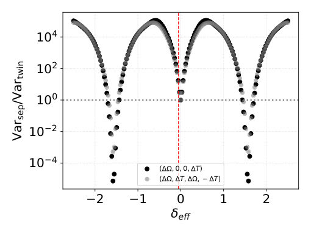
<figcaption class="paper-figure-caption"><b>Fig 4.</b> FIG. 4. State-level robustness of the twin-beam advantage under generalized two-mode encoding. We plot the variance product ratio, evaluated from the complete two-mode Gaussian covariance matrix and mean vector, for σc = 100, κ = 1, and nth = 0 as a func- tion of the encoding asymmetry δeff. Black markers correspond to the independent encoding used in the main text, while gray markers correspond to the mixed encoding. The red dashed line marks the operating point used in the first part of the main-text analysis.</figcaption>
</figure>
<figure class="paper-figure-card">
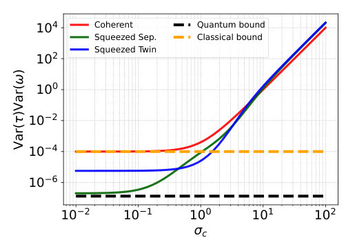
<figcaption class="paper-figure-caption"><b>Fig 5.</b> FIG. 5. Product of the estimator variances as a function of the correlated-noise strength σc for coherent (red), separable squeezed (green), and twin-beam (blue) probes for a fixed homodyne basis.</figcaption>
</figure>
</div>

<p><strong>Summary.</strong> This work analyzes quantum LiDAR performance to determine when entanglement offers an advantage over simple squeezing under realistic noise. By modeling correlated jamming noise, the authors show that twin-beam states provide superior estimation precision compared to classical or locally squeezed light. This establishes a receiver-aware protocol for achieving practical quantum enhancement in remote sensing.</p>
<p><strong>Why it may be interesting.</strong> It provides a concrete, experimentally relevant roadmap for achieving quantum enhancement in remote sensing by identifying the specific noise structure (correlated interference) that unlocks the full potential of multipartite entanglement over local resources.</p>
<details>
<summary>Detailed structure</summary>
<p><strong>Main problem.</strong> The study investigates whether entanglement provides a genuine operational advantage over local squeezing for quantum LiDAR when the dominant noise source is structured, correlated interference rather than independent noise.</p>
<p><strong>Main result.</strong> Correlated noise establishes an operational regime where twin-beam probes outperform both classical and separable squeezed states, provided the receiver adaptively optimizes its measurement basis.</p>
<p><strong>Method.</strong> The analysis uses a unified Gaussian framework to compare three quantum probe types (coherent, separable squeezed, twin-beam) by calculating joint estimation performance metrics like Fisher Information and Mean Square Error for range and velocity estimation.</p>
<p><strong>Model / system.</strong> The system is a Quantum LiDAR setup performing joint range ($   au$) and velocity ($\omega$) estimation using bright two-mode Gaussian probes detected via homodyne measurements. The noise model incorporates both standard loss/thermal background and structured correlated jamming noise.</p>
<p><strong>Key observables.</strong> Joint range–velocity estimation performance (variance products), Mean Square Error (MSE) of parameter estimates, and the ratio quantifying the advantage between different quantum states.</p>
<p><strong>Important parameters / regimes.</strong> Fixed total signal energy ($N=50$), correlated noise strength ($\sigma_c$), and the adaptive optimization of receiver measurement settings (LO phases).</p>
<p><strong>Assumptions / limitations.</strong> The analysis assumes that the receiver can adaptively optimize its measurement basis to maximize accessible information, moving beyond simple theoretical bounds.</p>
<p><strong>Figures summary.</strong> Figures compare joint estimation performance vs. correlated noise strength ($\sigma_c$), showing the hierarchy of advantages; other figures detail reconstruction MSE and covariance ellipses for different probe types under varying conditions.</p>
<p><strong>Paper structure.</strong> The paper progresses from establishing the general problem in quantum sensing to modeling specific noise regimes (loss/thermal vs. correlated jamming). It then compares the performance metrics across coherent, separable squeezed, and twin-beam states, culminating in demonstrating the operational advantage of entanglement under structured noise via simulation.</p>
</details>
<details>
<summary>Abstract</summary>
<p>Quantum light promises improved precision in optical remote sensing, but its practical advantage depends critically on whether nonclassical resources remain useful under realistic noise and experimentally accessible detection. This question becomes especially relevant for LiDAR systems, where a quantum advantage has been demonstrated for target detection and joint range-velocity estimation, but mostly under idealized conditions or simple noise models, such as optical loss and thermal background. A key open point is whether entanglement provides an operational advantage when the dominant disturbance is not independent noise, but structured interference across sensing modes. Here, we address this question by studying the joint estimation of target range and velocity with bright two-mode Gaussian probes and homodyne detection, comparing coherent, separable squeezed, and twin-beam states at a fixed resource budget. Our results reveal a hierarchy of quantum resources set by the noise structure: separable squeezing provides a robust advantage over coherent illumination under loss and thermal background, whereas twin-beam probes become superior under correlated jamming when the receiver is adaptively optimized. These results establish correlated noise as the operational regime in which entanglement provides a robustness advantage beyond local squeezing, opening a receiver-aware route to quantum-enhanced LiDAR in realistic and potentially adversarial environments.</p>
</details>
<p><sub><a href="#top">↑ back to top</a></sub></p>

<p><a id="paper-2606.17848"></a></p>
<h3 id="nonlinear-optical-probing-of-ferroic-octupolar-order-parameter-in-collinear-altermagnet"><a href="http://arxiv.org/abs/2606.17848v1">Nonlinear Optical Probing of Ferroic-Octupolar Order Parameter in Collinear Altermagnet</a></h3>
<p><strong>Authors:</strong> P. A. Usachev, R. V. Pisarev, V. V. Pavlov<br>
<strong>Type:</strong> experiment · <strong>Category:</strong> strongly correlated electrons · <strong>PDF:</strong> <a href="https://arxiv.org/pdf/2606.17848v1">https://arxiv.org/pdf/2606.17848v1</a><br>
<strong>Analysis basis:</strong> full PDF text, analyzed in chunks
<strong>Topic relevance:</strong> <code>exotic spin models in light-matter</code> <strong>3/5</strong> · <code>spintronics-quantum-optics interface</code> <strong>3/5</strong> · <code>interference shaping light</code> <strong>1/5</strong> · <code>quantum optics experiment</code> <strong>1/5</strong></p>
<div class="figure-strip-hint">↔ Scroll figures horizontally</div>
<div class="paper-figures-scroll">
<figure class="paper-figure-card">

<figcaption class="paper-figure-caption"><b>Fig 1.</b> FIG. 2. Polarization-dependent SHG signals registered in the two geometries Eω ∥E2ω and Eω ⊥E2ω and at temperatures of 1.6 K and 45 K. The experimental SHG intensities are indicated by points, modelled SHG signals are shown by lines. Inset shows the parallel Eω ∥E2ω and crossed Eω ⊥E2ω</figcaption>
</figure>
<figure class="paper-figure-card">
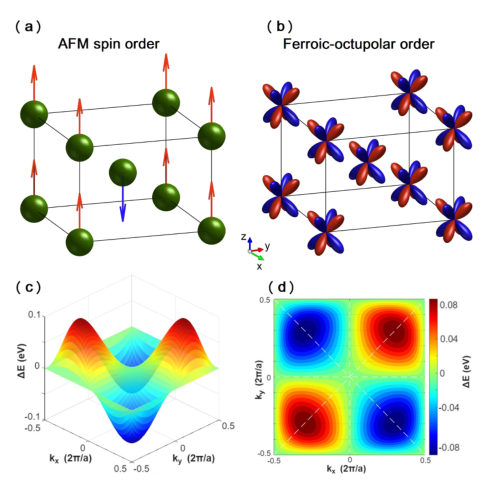
<figcaption class="paper-figure-caption"><b>Fig 2.</b> FIG. 1. (a) The AFM spin order of Co2+ ions and (b) the ferrotype ordering of magnetic octupoles in CoF2. The angu- lar distributions of magnetization density are marked by the red and blue colors representing regions of up and down spin polarizations, respectively [9]. (c) The 3D graph and (d) the flat mapping of d-wave spin splitting in CoF2 (see SI 2 for details).</figcaption>
</figure>
<figure class="paper-figure-card">
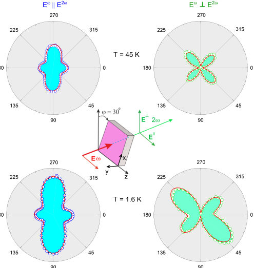
<figcaption class="paper-figure-caption"><b>Fig 3.</b> Figure 3 shows the temperature evolution of SHG inten- sities in two polarization geometries for different angles (Eω ⊥E2ω = 0◦and 45◦, Eω ∥E2ω = 90◦), the angle is counted in respect to Eω for both geometries. These experimental SHG data provide a quantitative measure of the spin-induced contribution. A purely magnetic re-</figcaption>
</figure>
<figure class="paper-figure-card">
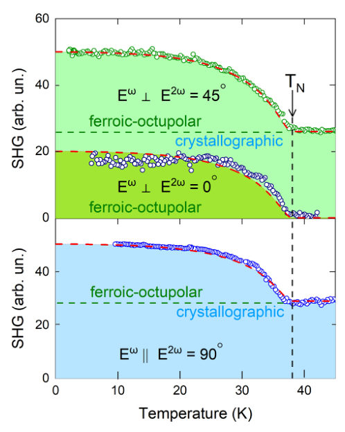
<figcaption class="paper-figure-caption"><b>Fig 4.</b> FIG. 3. Temperature dependencies of SHG intensity for two geometries Eω ⊥E2ω and Eω ∥E2ω (dots). The red dash lines show temperature dependencies of the squared order pa- rameter of CoF2 obtained from the neutron spectroscopy data [42].</figcaption>
</figure>
<figure class="paper-figure-card">
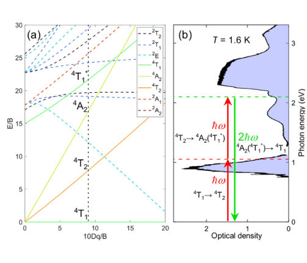
<figcaption class="paper-figure-caption"><b>Fig 5.</b> FIG. 4. (a) Tanabe-Sugano diagram for 3d7 electron com- plex of the Co2+ ion in the octahedral crystal field of F−</figcaption>
</figure>
</div>

<p><strong>Summary.</strong> This work reports on using Second-Harmonic Generation (SHG) spectroscopy as a novel, symmetry-sensitive tool to detect the ferroic-octupolar magnetic order parameter in the altermagnet $ ext{CoF}_2$. By analyzing the temperature and polarization dependence of the SHG signal relative to the Néel temperature, the authors confirm that the observed nonlinear response is directly governed by the hidden antiferromagnetic octupole moment. This establishes a powerful optical pathway for studying complex magnetic ground states.</p>
<p><strong>Why it may be interesting.</strong> The use of nonlinear optics (SHG) to probe higher-order magnetic multipoles ($   ext{octupole}$) is highly relevant for understanding exotic quantum phases in condensed matter systems that are not captured by simple magnetization measurements.</p>
<details>
<summary>Detailed structure</summary>
<p><strong>Main problem.</strong> The study aims to develop a direct experimental method to probe the hidden ferroic-octupolar spin order parameter in altermagnets, which lack net magnetization and are invisible to standard magnetometry.</p>
<p><strong>Main result.</strong> The observation of electric and magnetic dipole forbidden Second-Harmonic Generation (SHG) below the Néel temperature confirms that the signal is proportional to a ferroic-octupole-induced nonlinear polarization, establishing SHG as a novel diagnostic tool for this order.</p>
<p><strong>Method.</strong> Nonlinear Optical Second-Harmonic Generation (SHG) spectroscopy was employed, analyzing the symmetry dependence of the resulting polarization ($\mathbf{P}_{2\omega}$) relative to temperature and crystal orientation.</p>
<p><strong>Model / system.</strong> The system is the altermagnet $ ext{CoF}_2$, which exhibits a collinear Antiferromagnetic (AFM) order below $T_N = 38 	ext{ K}$. The theoretical framework models the nonlinear polarization as arising from an electric-quadrupolar term proportional to the magnetic octupole order parameter ($\mathbf{\mathcal{O}}^M$).</p>
<p><strong>Key observables.</strong> SHG intensity ($I_{2\omega}$), temperature dependence of $I_{2\omega}$, and polarization anisotropy measurements across different incidence angles.</p>
<p><strong>Important parameters / regimes.</strong> Néel Temperature ($T_N = 38 	ext{ K}$); the ferroic-octupole order parameter ($\mathbf{\mathcal{O}}^M$); photon energy matching three-photon resonance with $    ext{Co}^{2+}$ $d$-$d$ transitions.</p>
<p><strong>Assumptions / limitations.</strong> The analysis assumes that the total SHG signal is a sum of crystallographic and spin-induced contributions, and that interference between these two components can be neglected for robust measurement.</p>
<p><strong>Figures summary.</strong> Figures illustrate the AFM spin order; compare polarization-dependent SHG signals above ($T>T_N$) versus below ($T<T_N$) $T_N$; and show the temperature evolution of the spin-induced component confirming its magnetic origin.</p>
<p><strong>Paper structure.</strong> The paper progresses by establishing the theoretical necessity of probing hidden order parameters, detailing the symmetry analysis linking SHG to the octupole moment ($\mathbf{P}<em>{2\omega} \propto \chi^{(3)}(\mathbf{\mathcal{O}}^M) : \mathbf{E}</em>\omega 
abla \mathbf{E}_\omega$), presenting experimental measurements showing temperature and polarization dependence, and concluding with the establishment of the technique's utility.</p>
</details>
<details>
<summary>Abstract</summary>
<p>Altermagnetism as a new concept in condensed matter physics is currently being thoroughly investigated. Despite the absence of macroscopic magnetization, altermagnets host a hidden spin order whose direct detection remains a challenge. Here we report on the observation of electric and magnetic dipole forbidden optical second-harmonic generation (SHG) in the altermagnet CoF$_2$ with a centrosymmetric lattice and spin order. We demonstrate that below the Néel temperature $T_N = 38$ K the SHG signal is sensitive to the ferrotype magnetic octupole $\mathbf{\mathcal{O}}^M$ which is the order parameter in the antiferromagnetic phase. By combining polarization-resolved SHG experimental data and a phenomenological symmetry analysis, we show that the altermagnetic spin structure of CoF$_2$ enables a ferroic-octupole-induced electric-quadrupolar nonlinear polarization $\mathbf{P}^{2ω} = \mathrm i\varepsilon_{0}{ }^c\mathbfχ^{(3)}(\mathbf{\mathcal{O}}^M) :\mathbf{E}^ω \nabla \mathbf{E}^ω$. The temperature dependence of SHG reveals a phase transition at $T_N$ confirming the spin origin of the observed signal. The SHG response is resonantly enhanced by a coherent three-photon process caused by the electronic $d$-$d$ transitions of the Co$^{2+}$ ion. Model calculations of SHG polarization rotational anisotropies and temperature dependencies give a reasonable agreement with experimental data, proving the disclosed nonlinear contribution. Our results establish SHG as a novel sensitive tool of ferroic-octupolar spin ordering and highlight the potential of CoF$_2$ and other altermagnets for further nonlinear optical investigations and applications.</p>
</details>
<p><sub><a href="#top">↑ back to top</a></sub></p>

<p><a id="paper-2606.17167"></a></p>
<h3 id="thermal-one-point-functions-and-asymptotic-cft-data-qft-in-ads"><a href="http://arxiv.org/abs/2606.17167v1">Thermal One-point Functions and Asymptotic CFT Data: QFT in AdS</a></h3>
<p><strong>Authors:</strong> Ilija Burić, Francesco Mangialardi, Francesco Russo, Volker Schomerus, Alessandro Vichi<br>
<strong>Type:</strong> theory · <strong>Category:</strong> statistical mechanics · <strong>PDF:</strong> <a href="https://arxiv.org/pdf/2606.17167v1">https://arxiv.org/pdf/2606.17167v1</a><br>
<strong>Analysis basis:</strong> full PDF text, analyzed in chunks
<strong>Topic relevance:</strong> <code>Keldysh / 2PI / non-Gaussian methods</code> <strong>3/5</strong> · <code>non-equilibrium dynamics</code> <strong>2/5</strong> · <code>driven-dissipative phase transition</code> <strong>1/5</strong> · <code>methods for driven-dissipative</code> <strong>1/5</strong> · <code>non-equilibrium universality</code> <strong>1/5</strong></p>
<div class="figure-strip-hint">↔ Scroll figures horizontally</div>
<div class="paper-figures-scroll">
<figure class="paper-figure-card">
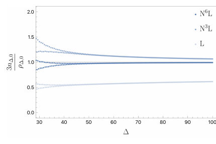
<figcaption class="paper-figure-caption"><b>Fig 1.</b> Figure 1. GFF spectral density of scalars operators with ∆ϕ = 2</figcaption>
</figure>
<figure class="paper-figure-card">
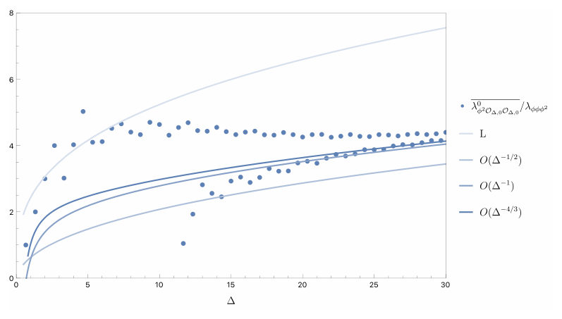
<figcaption class="paper-figure-caption"><b>Fig 2.</b> Figure 2. GFF OPE coefficients λ0 ϕ2OO for scalars, ∆ϕ = 2 3. We compare normalised exact OPE coefficients for scalar exchanged operators with the asymptotic formula (3.39) with additional subleading corrections.</figcaption>
</figure>
<figure class="paper-figure-card">
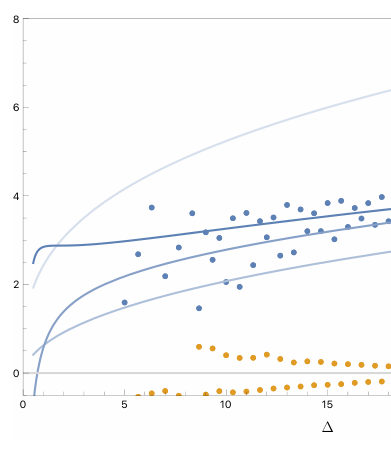
<figcaption class="paper-figure-caption"><b>Fig 3.</b> Figure 3. GFF OPE coefficients λ0 ϕ2OO for spin one, ∆ϕ = 2</figcaption>
</figure>
<figure class="paper-figure-card">
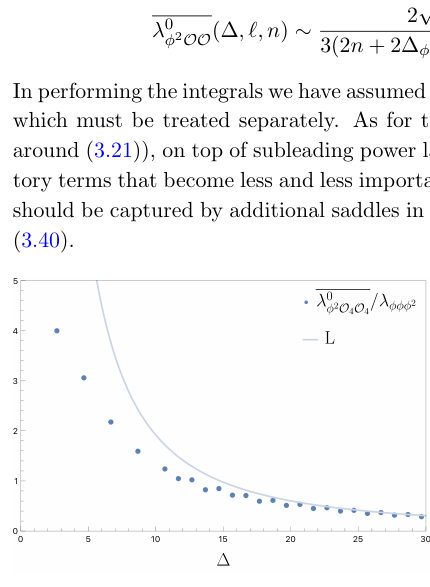
<figcaption class="paper-figure-caption"><b>Fig 4.</b> Figure 4. OPE coefficients with four- and five-particle scalars internal operators, ∆ϕ = 2</figcaption>
</figure>
<figure class="paper-figure-card">
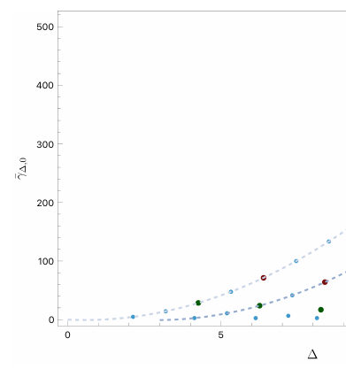
<figcaption class="paper-figure-caption"><b>Fig 5.</b> Figure 5. Low-lying anomalous dimensions of scalars, ∆ϕ = 33</figcaption>
</figure>
</div>

<p><strong>Summary.</strong> This work analyzes thermal properties of a 3D CFT dual to an interacting scalar field in AdS4. Using advanced techniques like thermal inversion formulas, the authors determine the asymptotic behavior of key observables such as spectral densities and OPE coefficients. The main achievement is demonstrating that these derived asymptotic results maintain high quantitative accuracy even when considering intermediate energy regimes and weak interactions.</p>
<p><strong>Why it may be interesting.</strong> While focused on AdS/CFT, the rigorous development of thermal effective field theories for one-point functions and the extraction of universal asymptotic data are powerful analytical tools applicable to understanding critical phenomena in many quantum systems.</p>
<details>
<summary>Detailed structure</summary>
<p><strong>Main problem.</strong> The research investigates thermal partition functions and one-point functions of a 3D CFT dual to a massive scalar field in AdS4.</p>
<p><strong>Main result.</strong> The authors derive asymptotic formulas for spectral density and OPE coefficients that remain quantitatively accurate even at intermediate conformal weights, surviving the inclusion of bulk interactions.</p>
<p><strong>Method.</strong> They employ thermal inversion formulas applied to correlation functions derived from analyzing the partition function using techniques involving conformal block decompositions and high-temperature expansions.</p>
<p><strong>Model / system.</strong> The system is a Conformal Field Theory (CFT) in 3D, holographically dual to a massive interacting scalar field theory ($\Phi^3, \Phi^4$) propagating in Anti-de Sitter space (AdS$_4$).</p>
<p><strong>Key observables.</strong> Thermal partition function, one-point functions of primary fields, spectral density $
ho(\Delta, \ell)$, and OPE coefficients ($\lambda_{\phi O}$).</p>
<p><strong>Important parameters / regimes.</strong> Inverse temperature ($eta$), chemical potential ($\mu$), conformal dimension ($\Delta$), and spin ($\ell$). The analysis focuses on the high-temperature limit ($eta 	o 0$) and large $\Delta$ regimes.</p>
<p><strong>Assumptions / limitations.</strong> The analysis relies fundamentally on the AdS/CFT correspondence, utilizing techniques derived from conformal block expansions and asymptotic analysis in complex variables.</p>
<p><strong>Figures summary.</strong> Figures compare asymptotic formulas for spectral density and OPE coefficients against exact results obtained through various limits (e.g., GFF theory).</p>
<p><strong>Paper structure.</strong> The paper systematically progresses by first analyzing the non-interacting Generalized Free Field (GFF) theory, then incorporating perturbative corrections from cubic and quartic bulk interactions, applying thermal inversion techniques throughout.</p>
</details>
<details>
<summary>Abstract</summary>
<p>We investigate the thermal partition and one-point functions of the three-dimensional conformal field theory dual to a massive interacting scalar field in AdS$_4$. Using thermal inversion formulas, we determine the asymptotic behaviour of the spectral density and OPE coefficients involving heavy operators at fixed spin. We first analyse these CFT data for the generalised free field, corresponding to the non-interacting bulk theory. Then we compute the first-order perturbative corrections induced by the cubic and quartic bulk interactions. The thermal observables considered here probe a sector associated with operators of large dimension and, in the bulk description, a regime dominated by states with large particle number. This regime remains comparatively unexplored even in generalised free field theory. Remarkably, the asymptotic formulas obtained from thermal inversion remain quantitatively accurate far from the asymptotic regime, describing CFT data reliably already at intermediate conformal weights. Our results show that this feature survives the inclusion of bulk interactions and provide new analytic control over heavy-state data in conformal field theories.</p>
</details>
<p><sub><a href="#top">↑ back to top</a></sub></p>

<p><a id="paper-2606.17894"></a></p>
<h3 id="demultiplexing-generalized-information-via-quantum-transmission-lines"><a href="http://arxiv.org/abs/2606.17894v1">Demultiplexing Generalized Information via Quantum Transmission Lines</a></h3>
<p><strong>Authors:</strong> Soham Sau, Anna Jenčová, Tamal Guha<br>
<strong>Type:</strong> theory · <strong>Category:</strong> quantum information and computing · <strong>PDF:</strong> <a href="https://arxiv.org/pdf/2606.17894v1">https://arxiv.org/pdf/2606.17894v1</a><br>
<strong>Analysis basis:</strong> full PDF text, analyzed in chunks
<strong>Topic relevance:</strong> <code>entanglement &amp; information structure</code> <strong>3/5</strong> · <code>correlated / nonlocal dissipation</code> <strong>1/5</strong> · <code>driven-dissipative phase transition</code> <strong>1/5</strong> · <code>methods for driven-dissipative</code> <strong>1/5</strong> · <code>non-equilibrium dynamics</code> <strong>1/5</strong></p>
<div class="figure-strip-hint">↔ Scroll figures horizontally</div>
<div class="paper-figures-scroll">
<figure class="paper-figure-card">
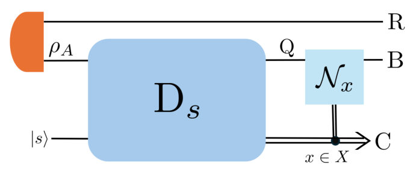
<figcaption class="paper-figure-caption"><b>Fig 1.</b> Figure 1. Schematic diagram of a Q-DEMUX. A bipartite state between Alice A and the Reference R is prepared and Alice’s marginal state ρA is sent through the Q-DEMUX. Depending upon the nature of information encoded in ρA, the selector s ∈{0, 1} is chosen. Finally, at the output end depending upon the classical random variable x ∈X registered in C a pre-decided correction operation Nx is applied on the output quantum state at Q.</figcaption>
</figure>
<figure class="paper-figure-card">
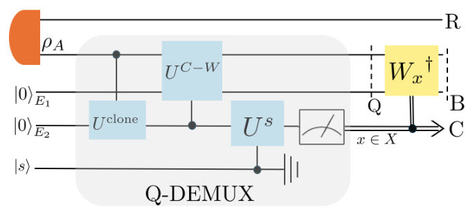
<figcaption class="paper-figure-caption"><b>Fig 2.</b> Figure 2. Circuit diagram for a pure-perfect Q-DEMUX. The gray box denotes the Q-DEMUX realization in terms of the controlled unitary gates (cyan) and the din-dimensional computational basis measurement on E2. Finally, the correcting unitary (yellow) {W † x}x is appended on the subsystem Q ≃AE1 externally.</figcaption>
</figure>
</div>

<p><strong>Summary.</strong> The paper develops the theory of the Quantum Demultiplexer (Q-DEMUX) to quantify the total amount of generalized information (classical plus quantum) that can be perfectly routed from an input state. It establishes fundamental upper bounds on this demultiplexing strength and characterizes the specific types of underlying quantum channels required to achieve these theoretical maximums.</p>
<p><strong>Why it may be interesting.</strong> This work provides a rigorous quantum information-theoretic framework for understanding how classical and quantum data streams can be simultaneously processed or separated within a single physical device, which has implications for quantum networking protocols.</p>
<details>
<summary>Detailed structure</summary>
<p><strong>Main problem.</strong> The paper investigates whether generalized information, encompassing both classical and quantum data encoded in a quantum system, can be perfectly routed or 'demultiplexed' at designated output ports using a Quantum Demultiplexer (Q-DEMUX). It seeks to characterize the fundamental limits of this process.</p>
<p><strong>Main result.</strong> The maximum total demultiplexing strength is bounded by $\log_2 d_{	ext{in}}$, and optimal performance requires the underlying induced quantum channel ($\Lambda_{	ext{ind}}$) to be a specific combination of Random Isometry (RI) and Classical-Quantum (C-Q) channels.</p>
<p><strong>Method.</strong> The analysis uses information theoretic tools, defining total demultiplexing strength by summing classical mutual information and quantum coherent information. It involves characterizing the Q-DEMUX via its relationship to instrument realizations and deriving upper bounds using capacity arguments.</p>
<p><strong>Model / system.</strong> The core model is the Quantum Demultiplexer (Q-DEMUX), which acts as a CPTP map taking an input state $
ho^A_{in}$ and routing information to separate quantum ($Q$) and classical ($C$) output ports based on a selector $s$. The process is mathematically linked to induced quantum channels ($\Lambda_{	ext{ind}}$) acting on the system.</p>
<p><strong>Key observables.</strong> Total Demultiplexing Strength ($T_s(D)$), Classical Mutual Information, Quantum Coherent Information, and the channel's capacity bounds ($C$ and $Q$).</p>
<p><strong>Important parameters / regimes.</strong> The input dimension ($d_{	ext{in}}$) sets the fundamental upper bound on achievable information transfer ($\log_2 d_{	ext{in}}$).</p>
<p><strong>Assumptions / limitations.</strong> Key assumptions include relating the Q-DEMUX to instrument realizations and using techniques like Stinespring dilations and bounding arguments based on entropy measures.</p>
<p><strong>Figures summary.</strong> Figure 2 illustrates a circuit diagram for a pure-perfect Q-DEMUX, involving controlled unitary gates and measurements on an auxiliary system $E_2$.</p>
<p><strong>Paper structure.</strong> The paper progresses by first defining the Q-DEMUX concept (Chunk 1), then formalizing the total demultiplexing strength by combining classical and quantum components (Chunk 2). Subsequent sections characterize the necessary structure of the underlying channel ($\Lambda_{	ext{ind}}$) required to achieve maximal strength, culminating in theorems that specify these optimal channel forms (Chunks 3, 4, 5).</p>
</details>
<details>
<summary>Abstract</summary>
<p>Demultiplexers are the fundamental primitives of network architecture, enabling perfect routing of an input classical signal to a designated one, among multiple output ports. Quantum transmission lines, having access to the quantum systems directly, are able to transmit both the classical and quantum information encoded in quantum systems. A natural question therefore emerges that whether the scrambled classical and quantum information in a quantum system can be perfectly demultiplexed in the designated classical and quantum output ports? Here we answer this question by introducing a quantum to quantum-classical device, namely the quantum demultiplexer (Q-DEMUX). We characterize the class of Q-DEMUXs enabling perfect routing of both the classical and the quantum information along with their simple circuit realizations. Our results highlight an explicit connection between the strength of a Q-DEMUX with the incompatibility of quantum instruments. Finally, we extend the notion in a stronger variant where the sender is oblivious regarding the nature of the data to be transmitted through the Q-DEMUX.</p>
</details>
<p><sub><a href="#top">↑ back to top</a></sub></p>

<p><a id="paper-2606.17618"></a></p>
<h3 id="helical-dirac-current-with-local-coupling-to-a-chiral-potential"><a href="http://arxiv.org/abs/2606.17618v1">Helical Dirac Current with Local Coupling to a Chiral Potential</a></h3>
<p><strong>Authors:</strong> Ju Gao, Fang Shen<br>
<strong>Type:</strong> theory · <strong>Category:</strong> other · <strong>PDF:</strong> <a href="https://arxiv.org/pdf/2606.17618v1">https://arxiv.org/pdf/2606.17618v1</a><br>
<strong>Analysis basis:</strong> full PDF text, analyzed in chunks
<strong>Topic relevance:</strong> <code>spintronics-quantum-optics interface</code> <strong>3/5</strong> · <code>Kondo &amp; dissipative impurity</code> <strong>1/5</strong> · <code>analog quantum simulation</code> <strong>1/5</strong> · <code>exotic spin models in light-matter</code> <strong>1/5</strong> · <code>non-equilibrium dynamics</code> <strong>1/5</strong></p>
<div class="figure-strip-hint">↔ Scroll figures horizontally</div>
<div class="paper-figures-scroll">
<figure class="paper-figure-card">
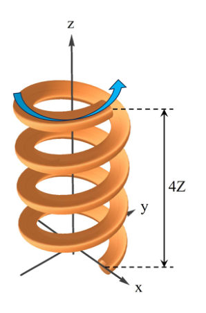
<figcaption class="paper-figure-caption"><b>Fig 1.</b> FIG. 1. A propagating Dirac electron along the +z direction with spin up carries an intrinsic helical conserved current already at zero orbital angular momentum, l = 0. The arrow indicates the circulation direction, and the label 4Z marks four geometric pitches. The helix represents the real-space geometry of the conserved Dirac current rather than a particle trajectory. The central helical curve shows the representative streamline through the characteristic radius ρ = ρ∗, where the azimuthal current density is maximal. The surrounding shaded tube provides only visual thickness around this streamline (rendered with radius a = 0.2ρ∗) and does not depict the current magnitude or radial...</figcaption>
</figure>
</div>

<p><strong>Summary.</strong> The paper demonstrates that Dirac electrons confined in cylinders inherently possess a helical current texture even at zero orbital angular momentum. When this system interacts locally with a spatially chiral scalar potential, the interaction is highly selective, causing diagonal spin channels to vanish while only off-diagonal, spin-flipping channels survive. This establishes a fundamental, geometry-driven mechanism for spin polarization.</p>
<p><strong>Why it may be interesting.</strong> This work provides a fundamental, purely geometric mechanism for spin-selective interactions in low-dimensional systems, establishing a baseline theory applicable to understanding phenomena like CISS without invoking external magnetic fields or explicit SOC terms.</p>
<details>
<summary>Detailed structure</summary>
<p><strong>Main problem.</strong> The study investigates the intrinsic helical conserved-current texture carried by Dirac eigenstates confined cylindrically, and how this structure couples locally to an external chiral scalar potential.</p>
<p><strong>Main result.</strong> This coupling enforces a geometric selection rule: diagonal spin channels vanish while off-diagonal, handedness-converting channels survive. This mechanism is purely local and relies only on the inherent current texture, not external fields or SOC.</p>
<p><strong>Method.</strong> The authors derived exact spinor solutions for confined Dirac modes and calculated the resulting conserved current density. They then computed a channel-resolved matrix element kernel describing the interaction with a chiral scalar potential.</p>
<p><strong>Model / system.</strong> The model is a Dirac electron confined in cylindrical geometry (e.g., a nanotube) described by an effective Hamiltonian incorporating confinement potentials. The analysis focuses on the $l=0$ mode and its associated helical current structure.</p>
<p><strong>Key observables.</strong> Conserved Dirac four-current density components ($j_\phi, j_z$), local helical pitch $Z(
ho)$, and the channel-resolved matrix element kernel $M_{s's}(k', k)$.</p>
<p><strong>Important parameters / regimes.</strong> Cylinder radius $R$, energy scale $E_k$, chiral potential strength $V_0$, and momentum transfer $q$.</p>
<p><strong>Assumptions / limitations.</strong> The coupling calculation assumes the chiral potential has support only inside the cylinder, and the analysis focuses on the minimal static local-geometric vertex.</p>
<p><strong>Figures summary.</strong> Figure 1 illustrates the intrinsic helical conserved current texture at a characteristic radius $
ho^*$, emphasizing that the helix is defined by the current density itself.</p>
<p><strong>Paper structure.</strong> The paper first establishes the existence and properties of the helical current in confined Dirac modes. It then derives the matrix-element kernel resulting from coupling this current to a static chiral potential, culminating in the selection rule analysis.</p>
</details>
<details>
<summary>Abstract</summary>
<p>We show that exact Dirac eigenstates in cylindrical confinement carry a definite helical conserved-current texture even in the zero orbital angular momentum channel l = 0. For the lowest confined mode, the Dirac current contains a nonvanishing azimuthal component together with longitudinal transport and exhibits opposite handedness in the two spin-resolved sectors. The structure also persists into the evanescent region.   We further derive the channel-resolved matrix-element kernel generated by a static chiral scalar potential acting on the confined l = 0 Dirac modes. The resulting spin-selective coupling arises from the Dirac current texture and the scalar chiral potential, and yields a geometric selection rule in which diagonal channels vanish while off-diagonal conversion channels survive. The coupling strength is governed by an internal sampled-current overlap Jchi(k), defined as the integral from 0 to R of f(rho) times jphi_up(rho, k) times rho d rho.   This quantity measures the spatial overlap between the chiral radial profile and the spin-up azimuthal Dirac-current density. The mechanism is fully local and texture-based, without external magnetic fields or spin-orbit coupling.   Within standard Dirac theory, this work identifies the minimal static Dirac-geometric kernel underlying spin-selective response, establishing a baseline structure from which dynamical-medium, scattering, and transport formalisms can be systematically developed toward a complete description of spin-polarization phenomena such as CISS.</p>
</details>
<p><sub><a href="#top">↑ back to top</a></sub></p>

<p><a id="paper-2606.17329"></a></p>
<h3 id="robust-spin-splitting-and-strain-controlled-optical-response-in-monolayer-crc2n4-for-valleytronic-and-optoelectronic-applications"><a href="http://arxiv.org/abs/2606.17329v1">Robust Spin Splitting and Strain-Controlled Optical Response in Monolayer CrC2N4 for Valleytronic and Optoelectronic Applications</a></h3>
<p><strong>Authors:</strong> Md. Samrat, Vivek Chowdhury, Sake Wang, Ahmed Zubair<br>
<strong>Type:</strong> theory · <strong>Category:</strong> other · <strong>PDF:</strong> <a href="https://arxiv.org/pdf/2606.17329v1">https://arxiv.org/pdf/2606.17329v1</a><br>
<strong>Analysis basis:</strong> full PDF text, analyzed in chunks
<strong>Topic relevance:</strong> <code>spintronics-quantum-optics interface</code> <strong>3/5</strong> · <code>analog quantum simulation</code> <strong>2/5</strong> · <code>exotic spin models in light-matter</code> <strong>1/5</strong> · <code>non-equilibrium dynamics</code> <strong>1/5</strong></p>
<div class="figure-strip-hint">↔ Scroll figures horizontally</div>
<div class="paper-figures-scroll">
<figure class="paper-figure-card">
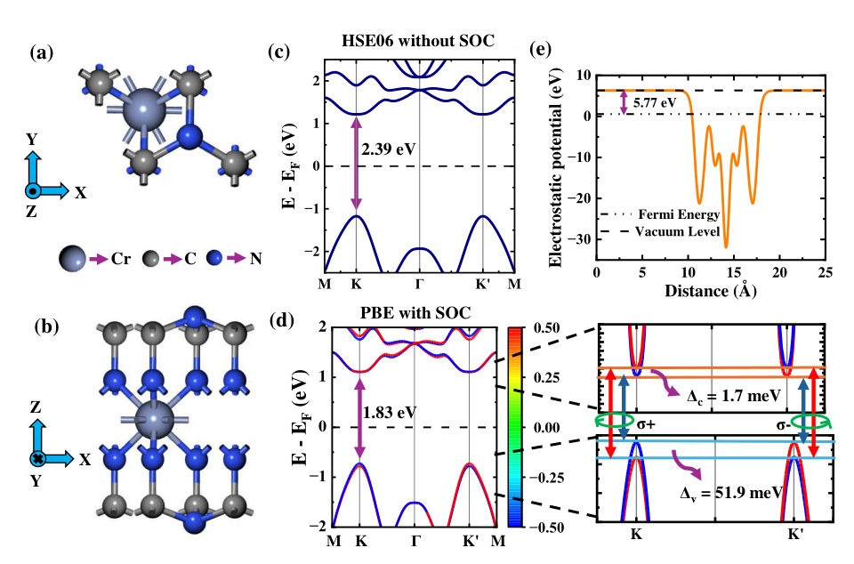
<figcaption class="paper-figure-caption"><b>Fig 1.</b> Figure 1: (a) Top view of monolayer CrC2N4. (b) Side view of monolayer CrC2N4. (c) Band structure (HSE06 without SOC) of monolayer CrC2N4. The band gap is marked using a purple arrow. (d) Band structure (PBE with SOC) of monolayer CrC2N4. The band gap is marked using a purple arrow, and CB and VB spin splittings are marked using orange and cyan horizontal lines, respectively, in the zoomed version. Red and blue arrows indicate the optical transition frequencies occurring at K and K′ valleys, respectively, which are coupled via right and left-hand circular polarization of light. The color bar represents expected values of the spin operator on the spinor wave-functions varying from -0.50...</figcaption>
</figure>
<figure class="paper-figure-card">
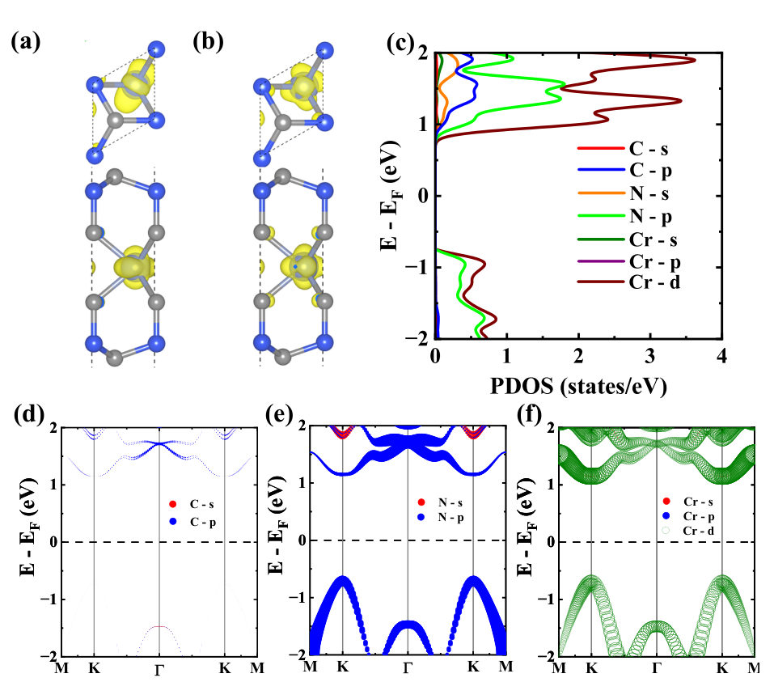
<figcaption class="paper-figure-caption"><b>Fig 2.</b> Figure 2: Band-decomposed charge densities of the (a) valence band maximum (VBM) and (b) conduction band minimum (CBM) of monolayer CrC2N4 at the K point. The isosurface value is set to 0.02 e bohr−3. (c) Spin–orbit-coupled projected density of states (PDOS) of monolayer CrC2N4, showing the orbital contributions from C, N, and Cr atoms. Orbital- projected band structures of the constituent atoms C, N, and Cr are presented in (d), (e), and (f), respectively.</figcaption>
</figure>
<figure class="paper-figure-card">
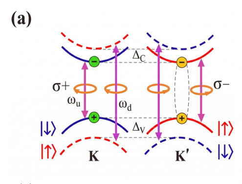
<figcaption class="paper-figure-caption"><b>Fig 3.</b> Figure 3: Spin– and valley-coupled optical selection rules and valley-dependent Hall response. (a) Valley-resolved interband optical transitions at the K and K′ points under circularly polarized light, σ+ and σ−. The transition energies ωu and ωd and the SOC-induced band splittings ∆c and ∆v in the conduction and valence bands are indicated. The red and blue parabolas denote out-of-plane spin-up and spin-down states, respectively. (b) Circularly polarized light induced a photoinduced charge Hall effect by selectively exciting carriers in one valley under an applied in-plane electric field E. (c) Linearly polarized light induces spin and valley Hall effects of electrons and holes, with an...</figcaption>
</figure>
<figure class="paper-figure-card">
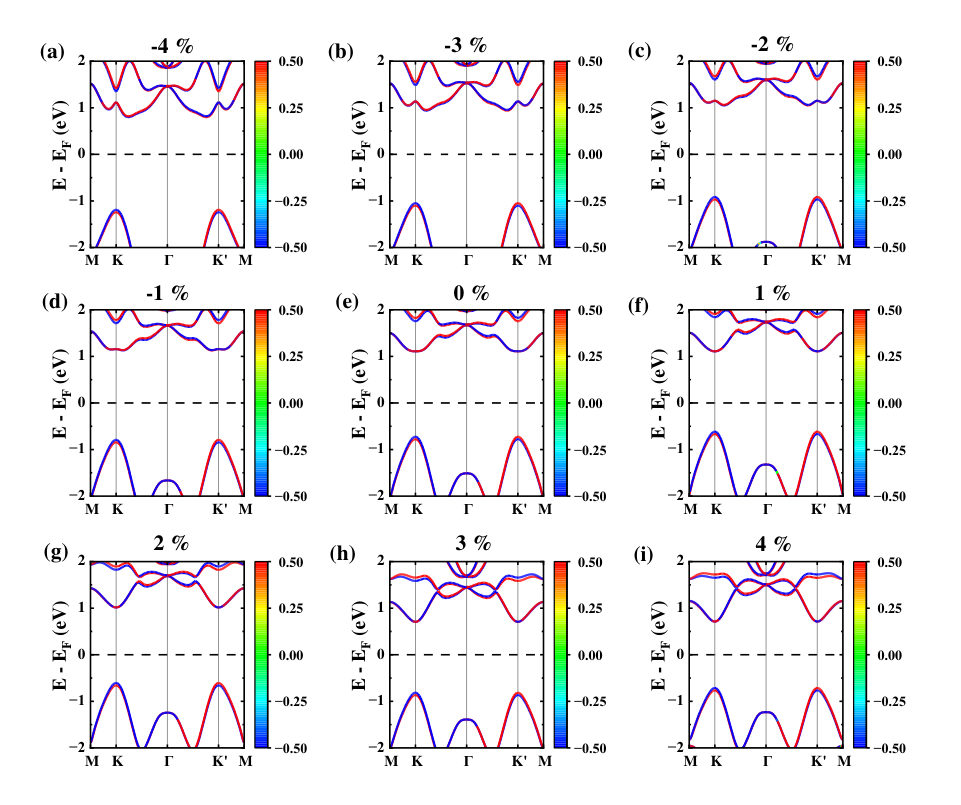
<figcaption class="paper-figure-caption"><b>Fig 4.</b> Figure 4: Band structures (with SOC) for (a) −4%, (b) −3%, (c) −2%, (d) −1%, (e) 0%, (f) 1%, (g) 2%, (h) 3%, and (i) 4% biaxial strain. The color bar represents expected values of the spin operator on the spinor wave-functions varying from -0.50 (blue) to +0.50 (red) along the z-axis.</figcaption>
</figure>
<figure class="paper-figure-card">

<figcaption class="paper-figure-caption"><b>Fig 5.</b> Figure 5(a–c) illustrate the variations of the band gap, Eg, spin splitting, and carrier</figcaption>
</figure>
</div>

<p><strong>Summary.</strong> This work theoretically investigates monolayer CrC2N4, demonstrating its potential as a tunable 2D semiconductor. Key findings include strong spin-orbit coupling leading to valley-dependent spin splitting and the ability of mechanical strain to precisely control the band gap and optical response. This makes it highly promising for developing next-generation valleytronic and optoelectronic devices.</p>
<p><strong>Why it may be interesting.</strong> Although focused on solid-state physics, the detailed theoretical modeling of spin-valley coupling and Berry curvature provides a rich platform for understanding topological effects that are relevant to quantum transport phenomena studied in AMO physics.</p>
<details>
<summary>Detailed structure</summary>
<p><strong>Main problem.</strong> The study investigates the electronic, valley, charge-transfer, and optical properties of monolayer CrC2N4, focusing on how spin-orbit coupling (SOC) and external strain tune its behavior for advanced device applications.</p>
<p><strong>Main result.</strong> CrC2N4 exhibits strong spin-valley locking due to SOC, and biaxial strain can significantly tune the band gap from 1.987 eV down to 1.421 eV while enhancing Berry curvature for valleytronic use.</p>
<p><strong>Method.</strong> The research relies heavily on first-principles calculations using DFT (PBE/HSE06) combined with advanced techniques like fully relativistic noncollinear calculations, Bader analysis, and RPA for optical properties.</p>
<p><strong>Model / system.</strong> The physical system is monolayer CrC2N4. The theoretical framework involves modeling the low-energy states near K/K' valleys using a two-band Dirac-type Hamiltonian to capture spin-valley coupling effects.</p>
<p><strong>Key observables.</strong> Band gap ($E_g$), SOC-induced spin splittings ($\Delta_v, \Delta_c$), Berry curvature ($\Omega_z$), optical absorption spectrum ($\alpha(\omega)$), and strain dependence of these properties.</p>
<p><strong>Important parameters / regimes.</strong> Biaxial strain range ($-4\%$ to $+4\%$), Spin splitting values ($51.9 	ext{ meV}$ for VB, $1.7 	ext{ meV}$ for CB).</p>
<p><strong>Assumptions / limitations.</strong> The analysis uses DFT/ab initio methods; optical spectra are calculated at the RPA level without explicitly including electron-hole interactions via the Bethe–Salpeter equation.</p>
<p><strong>Figures summary.</strong> Figures illustrate optimized geometries, band structures under SOC and strain, charge density distributions showing Cr-N bonding, and plots detailing the strain dependence of Berry curvature and optical coefficients ($\alpha, n, k$).</p>
<p><strong>Paper structure.</strong> The paper systematically analyzes the material's intrinsic properties (SOC effects, bonding) first, then details how biaxial strain modulates these electronic and optical responses, culminating in device-relevant predictions for valleytronics and optoelectronics.</p>
</details>
<details>
<summary>Abstract</summary>
<p>Monolayer CrC2N4 recently emerged as a promising two-dimensional semiconductor, yet its spin-orbit-coupled (SOC) physics and strain-tunable optical response remained largely unexplored. Here, we investigated the electronic, valley, charge-transfer, and optical properties of pristine and biaxially strained monolayer CrC2N4 using first-principles calculations. The monolayer exhibited a direct band gap at the K/K' valleys. SOC produced valley contrasting out-of-plane spin polarization, yielding a moderate valence band spin splitting of 51.9 meV and a small conduction band spin splitting of 1.7 meV. Orbital-resolved analysis showed that the edge states were mainly governed by Cr-d and N-p hybridization, while Bader analysis indicated polar-covalent bonding through charge transfer toward N atoms. Biaxial strain in the range of -4% to +4% tuned the band gap from 1.987 to 1.421 eV and drove an indirect-to-direct gap transition near -1% strain. Tensile strain enhanced the Berry curvature and red-shifted the optical response toward the visible-near-infrared region. These results suggested monolayer CrC2N4 as a promising platform for strain-engineered valleytronic and optoelectronic device applications.</p>
</details>
<p><sub><a href="#top">↑ back to top</a></sub></p>

<p><a id="paper-2606.17620"></a></p>
<h3 id="photon-anti-bunching-in-high-harmonic-generation"><a href="http://arxiv.org/abs/2606.17620v1">Photon anti-bunching in high harmonic generation</a></h3>
<p><strong>Authors:</strong> Philipp Stammer, Javier Rivera-Dean, Maciej Lewenstein<br>
<strong>Type:</strong> theory · <strong>Category:</strong> other · <strong>PDF:</strong> <a href="https://arxiv.org/pdf/2606.17620v1">https://arxiv.org/pdf/2606.17620v1</a><br>
<strong>Analysis basis:</strong> full PDF text, analyzed in chunks
<strong>Topic relevance:</strong> <code>interference shaping light</code> <strong>3/5</strong> · <code>Keldysh / 2PI / non-Gaussian methods</code> <strong>1/5</strong> · <code>methods for driven-dissipative</code> <strong>1/5</strong></p>
<div class="figure-strip-hint">↔ Scroll figures horizontally</div>
<div class="paper-figures-scroll">
<figure class="paper-figure-card">
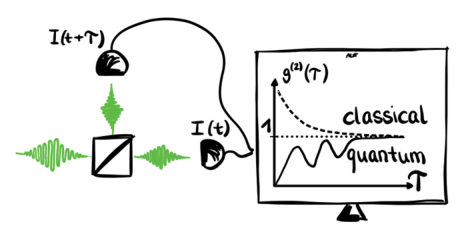
<figcaption class="paper-figure-caption"><b>Fig 1.</b> FIG. 1. Schematics of an experimental HBT-configuration to measure the second-order field correlation function, g(2)(τ), by means of the intensity correlations between the detectors at time I(t) and I(t + τ). While the equal time correlation func- tion g(2)(0) allows to infer on the photon number distribution, only the temporal correlation as a function of τ can conclude on photon anti-bunching via g(2)(0) &lt; g(2)(τ).</figcaption>
</figure>
<figure class="paper-figure-card">
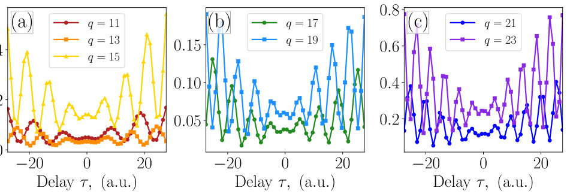
<figcaption class="paper-figure-caption"><b>Fig 2.</b> FIG. 2. We show the normalized second-order correlation function g(2)(τ) for the relevant range of non-perturbative odd har- monics in the plateau (a) q ∈{11, 13, 15} and (b) q ∈{17, 19}, while in (c) q ∈{21, 23} near the cut-off (for the low-order harmonics we refer to the Appendix B in which the same behavior is shown). The time-delay τ is taken to be after one complete cycle of the driving laser field T = 2π/ω, and evaluated at K = 50 delay times. The driving field parameters are E0 = 0.053 a.u. ωL = 0.057 a.u., and Ip = 0.5 a.u., corresponding to that of hydrogen (see SM for details).</figcaption>
</figure>
<figure class="paper-figure-card">
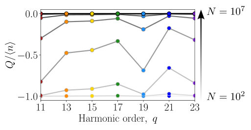
<figcaption class="paper-figure-caption"><b>Fig 3.</b> FIG. 4. Mandel Q-parameter as a function of the harmonic or- ders indicating sub-Poissonian photon statistics as Q &lt; 0. The Q-parameter is shown for increasing number of emitters N in- cluding log10 N ∈{2.0, 2.7, 3.4, 4.1, 4.8, 5.5, 6.7, 7.0}, where the guiding line indicates a fixed emitter number, and the colors are those from Fig. 2 for the respective harmonic order. The same field conditions as those in Fig. 2 are used.</figcaption>
</figure>
<figure class="paper-figure-card">
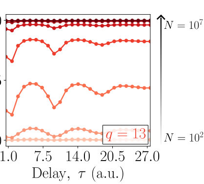
<figcaption class="paper-figure-caption"><b>Fig 4.</b> FIG. 3. Normalized intensity correlation g(2)(τ) of the q = 13 harmonic order for varying number of emitters N (harmonics q = 19 and q = 23 are shown in Fig. 6 of the Appendix B). The atom number increases for increasing color brightness includ- ing log10 N ∈{2.0, 2.7, 3.4, 4.1, 4.8, 5.5, 6.7, 7.0}. The same field conditions as those in Fig. 2 are considered.</figcaption>
</figure>
<figure class="paper-figure-card">
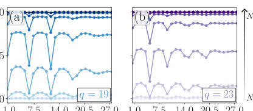
<figcaption class="paper-figure-caption"><b>Fig 5.</b> FIG. 6. Normalized intensity correlation g(2)(τ) for harmonic orders q = 19 in (a) and q = 23 in (b) for varying num- ber of emitters N, showing the same behavior as Fig 3. The atom number increases for increasing color brightness includ- ing log10 N ∈{2.0, 2.7, 3.4, 4.1, 4.8, 5.5, 6.7, 7.0}. The same field conditions as those in Fig. 2 are used.</figcaption>
</figure>
</div>

<p><strong>Summary.</strong> This paper theoretically predicts photon anti-bunching in High Harmonic Generation (HHG), providing the first evidence of single-photon temporal correlations in this process. Using advanced quantum field techniques, the authors calculate the intensity correlation function $g^{(2)}(	au)$, demonstrating that the emission violates classical bounds when considering only one emitted photon. This work is crucial for understanding non-classical light sources generated in intense laser fields.</p>
<p><strong>Why it may be interesting.</strong> This work is highly relevant to quantum optics and open quantum systems because it provides a rigorous theoretical pathway to observe fundamental non-classical light sources using an established, high-intensity physical process like HHG.</p>
<details>
<summary>Detailed structure</summary>
<p><strong>Main problem.</strong> The primary goal is to theoretically predict and demonstrate photon anti-bunching—a signature of single-photon emission—within the complex process of High Harmonic Generation (HHG). This marks a first theoretical discovery of non-classical temporal correlations in HHG.</p>
<p><strong>Main result.</strong> The authors successfully predicted clear evidence of photon anti-bunching ($g^{(2)}(0) < 1$) across the entire harmonic spectrum using quantum field theory methods. They also distinguished this single-photon signature from ensemble statistics like sub-Poissonian distributions.</p>
<p><strong>Method.</strong> The analysis relies on calculating high-order time correlation functions, specifically $G^{(2)}(	au)$, derived from the Heisenberg picture approach applied to the dipole moment operators within the HHG process.</p>
<p><strong>Model / system.</strong> The system is High Harmonic Generation (HHG), modeled quantum mechanically using a Hamiltonian incorporating field and interaction terms. The analysis progresses from single-atom calculations to many-emitter scenarios, treating the emission as an upconversion of multiple driving photons into one high-energy harmonic photon.</p>
<p><strong>Key observables.</strong> Normalized second-order intensity correlation function ($g^{(2)}(	au)$) and the Mandel Q-parameter ($Q$).</p>
<p><strong>Important parameters / regimes.</strong> Harmonic order ($q$), time delay ($ au$), and the number of emitters ($N$).</p>
<p><strong>Assumptions / limitations.</strong> The calculations assume an initial vacuum state for the field and utilize approximations that allow separating correlations into coherent and incoherent parts, especially in the many-emitter limit.</p>
<p><strong>Figures summary.</strong> Figures illustrate $g^{(2)}(	au)$ violating classical bounds (showing anti-bunching) for various harmonics and show how this correlation function approaches unity as the number of emitters ($N$) increases.</p>
<p><strong>Paper structure.</strong> The paper develops from establishing the theoretical framework using quantum field operators in the Heisenberg picture, calculating $g^{(2)}(	au)$ for single atoms to confirm anti-bunching, and finally extending the analysis to many emitters while distinguishing between temporal correlations (anti-bunching) and number statistics (sub-Poissonian).</p>
</details>
<details>
<summary>Abstract</summary>
<p>Photon anti-bunching is the direct evidence for the existence of photons without having a classical counterpart. Unlike bunching of photons, which can have a semi-classical description, the effect of photon anti-bunching can only be understood with quantized electromagnetic fields. However, for the process of high harmonic generation (HHG), where many photons of the driving field are upconverted to a single photon of higher energy, there is yet no clear evidence for the presence of individual photon emission. The key result of this work is the prediction of photon anti-bunching in the process of HHG, marking it the first theoretical discovery of non-classicality in the temporal correlations of HHG photons. While other non-classical signatures in HHG, such as sub-Poissonian statistics or squeezing, have been discussed for an ensemble of photons, the anti-bunching signature reported here is a signature of a single photon. This is achieved by using the recently developed Heisenberg picture approach for quantum optical HHG, revealing clear anti-bunching signatures in the intensity correlation function across the entire harmonic spectrum.</p>
</details>
<p><sub><a href="#top">↑ back to top</a></sub></p>

<p><a id="paper-2606.17902"></a></p>
<h3 id="hydrogen-s-electrons-as-the-origin-of-crystal-magnetism-beyond-spin-orbit-coupling"><a href="http://arxiv.org/abs/2606.17902v1">Hydrogen s-electrons as the origin of crystal magnetism beyond spin-orbit coupling</a></h3>
<p><strong>Authors:</strong> Baiqiang Liu, Zhen Gong, Rui Liu, Siyang Liu, Yue Feng, Zhigang Wang<br>
<strong>Type:</strong> theory · <strong>Category:</strong> strongly correlated electrons · <strong>PDF:</strong> <a href="https://arxiv.org/pdf/2606.17902v1">https://arxiv.org/pdf/2606.17902v1</a><br>
<strong>Analysis basis:</strong> full PDF text, analyzed in chunks
<strong>Topic relevance:</strong> <code>spintronics-quantum-optics interface</code> <strong>3/5</strong> · <code>exotic spin models in light-matter</code> <strong>1/5</strong></p>
<div class="figure-strip-hint">↔ Scroll figures horizontally</div>
<div class="paper-figures-scroll">
<figure class="paper-figure-card">
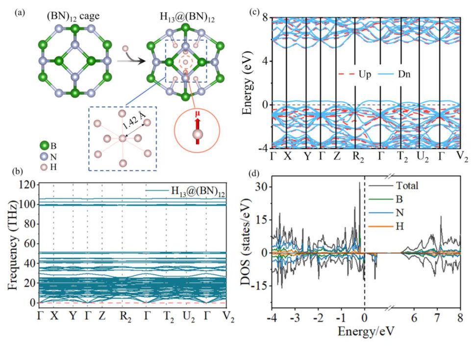
<figcaption class="paper-figure-caption"><b>Fig 1.</b> Fig. 1 | Structural properties of the H13@(BN)12 crystal. a, Schematic illustration of the primitive cell, showing</figcaption>
</figure>
<figure class="paper-figure-card">
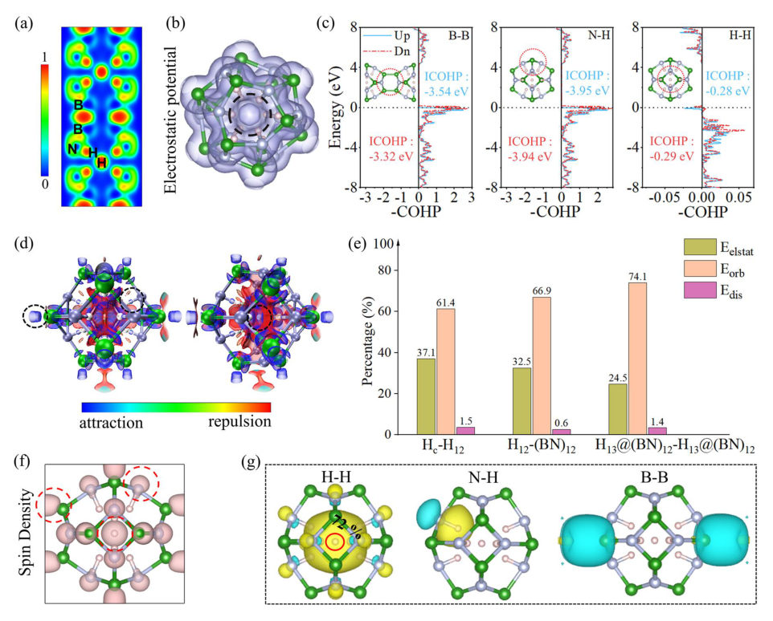
<figcaption class="paper-figure-caption"><b>Fig 2.</b> Fig. 2 | Interaction analyses and magnetic properties of H13@(BN)12. a, ELF map. ELF values close to 0 (blue)</figcaption>
</figure>
<figure class="paper-figure-card">
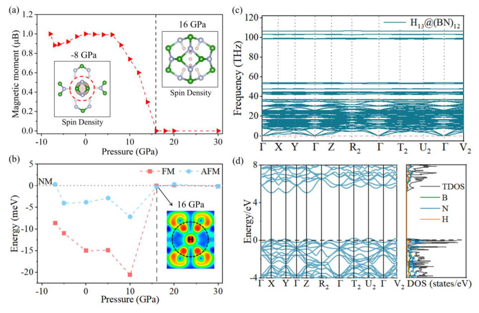
<figcaption class="paper-figure-caption"><b>Fig 3.</b> Fig. 3 | Magnetic properties of the H13@(BN)12 crystal and their modulation under applied stress. a, Evolution</figcaption>
</figure>
</div>

<p><strong>Summary.</strong> This work reports on the discovery of intrinsic ferromagnetism in $    ext{H}<em 12>{13}@(   ext{BN})</em>$, demonstrating that magnetism can arise from hydrogen's $1s$ s-electrons without relying on spin-orbit coupling. Using first-principles calculations, they show this magnetism is stabilized by the cage structure and can be tuned—specifically quenched under high compression—providing a blueprint for low-energy spintronics.</p>
<p><strong>Why it may be interesting.</strong> It provides a concrete theoretical framework for engineering magnetic materials where conventional $d$ or $f$ electron physics is not required, opening avenues for novel spintronic devices relevant to condensed matter theory.</p>
<details>
<summary>Detailed structure</summary>
<p><strong>Main problem.</strong> The study addresses the challenge of achieving robust magnetism derived from s-electrons, such as those in hydrogen, which are typically expected to have quenched spins.</p>
<p><strong>Main result.</strong> A ferromagnetic crystal $  ext{H}<em 12>{13}@(   ext{BN})</em>$ was shown to exhibit intrinsic magnetism originating solely from the central hydrogen $1s$ electron, establishing a pathway for low-SOC magnetic materials.</p>
<p><strong>Method.</strong> The research relies heavily on first-principles Density Functional Theory (DFT) calculations, supplemented by advanced analyses like Electron Localization Function (ELF), Crystal Orbital Hamilton Population (COHP), and phonon dispersion calculations.</p>
<p><strong>Model / system.</strong> The model system is the low-Z ferromagnetic crystal $   ext{H}<em 12>{13}@(   ext{BN})</em>$, where thirteen hydrogen atoms are encapsulated within a $(	ext{BN})_{12}$ cage. The magnetism is localized to the central H atom's $1s$ orbital.</p>
<p><strong>Key observables.</strong> Magnetic moment ($\mu_B$), spin-resolved band structure, Electron Localization Function (ELF) maps, and magnetic energy comparison under stress.</p>
<p><strong>Important parameters / regimes.</strong> Ambient pressure vs. 16 GPa compression; the critical role of the negative electrostatic potential within the cage.</p>
<p><strong>Assumptions / limitations.</strong> The stability mechanism is governed by the localization of the central hydrogen $1s$ electron, and SOC effects are negligible due to the s-electron nature.</p>
<p><strong>Figures summary.</strong> Figures illustrate structural properties, phonon dispersion confirming stability, band structures showing spin splitting, and ELF maps demonstrating electron localization changes under applied stress.</p>
<p><strong>Paper structure.</strong> The paper systematically establishes the magnetic origin from H $s$-electrons, confirms the ground state magnetism using multiple computational analyses (COHP, ELF), demonstrates the tunability of this magnetism via external pressure/stress, and concludes by outlining its potential for low-energy spintronics.</p>
</details>
<details>
<summary>Abstract</summary>
<p>Magnetism has long been attributed to localized d, f, and even p electrons with strong correlations, whereas s electrons exemplified by hydrogen are reactive and tend to have their spins quenched, making s-electron-derived magnetism and long-range ordered magnetic crystals seem unattainable. Here we report a low-Z ferromagnetic crystal H13@(BN)12 using first-principles calculations, where thirteen hydrogen atoms are encapsulated within a (BN)12 cage and magnetism originates from the 1s electron of the central hydrogen atom. The crystal remains stable under ambient pressure owing to chemical precompression. Notably, the central hydrogen atom retains a magnetic moment of 1 μB, with long-range magnetic order established through multicenter bonding within the H13 aggregate and the intercell B-B network, while the zero orbital angular momentum of s electrons renders spin-orbit coupling (SOC) negligible as expected. Electronic structure analyses reveal that the large cavity and central negative electrostatic potential of the (BN)12 cage localize the hydrogen 1s electron, preventing spin quenching. Interestingly, under 16 GPa compression, the system transforms into a nonmagnetic metallic state driven by delocalized electrons of the central hydrogen atom. This study opens a pathway for constructing s-electron-driven magnetic materials and lays the foundation for developing low-energy consumption magnetic devices without SOC.</p>
</details>
<p><sub><a href="#top">↑ back to top</a></sub></p>

<p><a id="paper-2606.18251"></a></p>
<h3 id="superconductivity-from-interband-coupling-to-ferroelectric-quantum-critical-fluctuations-in-two-dimensions"><a href="http://arxiv.org/abs/2606.18251v1">Superconductivity from interband coupling to ferroelectric quantum critical fluctuations in two dimensions</a></h3>
<p><strong>Authors:</strong> Sudip Kumar Saha, Jonathan Ruhman, Avraham Klein<br>
<strong>Type:</strong> theory · <strong>Category:</strong> strongly correlated electrons · <strong>PDF:</strong> <a href="https://arxiv.org/pdf/2606.18251v1">https://arxiv.org/pdf/2606.18251v1</a><br>
<strong>Analysis basis:</strong> full PDF text, analyzed in chunks
<strong>Topic relevance:</strong> <code>Keldysh / 2PI / non-Gaussian methods</code> <strong>3/5</strong> · <code>methods for driven-dissipative</code> <strong>1/5</strong></p>
<div class="figure-strip-hint">↔ Scroll figures horizontally</div>
<div class="paper-figures-scroll">
<figure class="paper-figure-card">
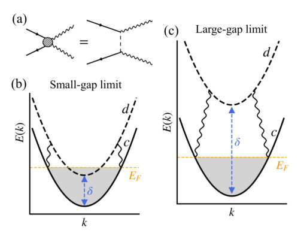
<figcaption class="paper-figure-caption"><b>Fig 1.</b> FIG. 1. The schematic diagram of the two-band model and the interaction via the two-phonon mechanism. (a) The di- agrammatic representation of the two-phonon process. The solid and dashed straight lines represent fermions of lower and upper bands, respectively. The wavy lines represent TO phonons. (b,c) The schematic illustration of the interband interactions mediated by TO phonons in the (b) small-gap limit and (c) large-gap limit. The lower- and higher-energy parabolic bands are shown by solid and dashed lines, respec- tively, separated by a band gap δ. The dashed horizontal line marks the Fermi energy, EF , and the shaded region denotes the occupied electronic states below EF .</figcaption>
</figure>
<figure class="paper-figure-card">
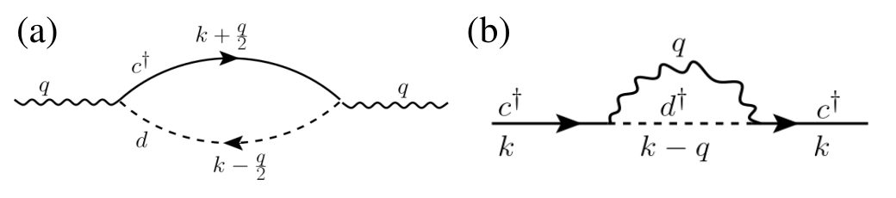
<figcaption class="paper-figure-caption"><b>Fig 2.</b> FIG. 2. The diagram of the self-energy. Panel (a) represents the one-loop polarization bubble and panel (b) represents the fermionic self-energy. The wavy lines represent the boson propagator. The solid and dashed straight lines represent Green’s functions corresponding to fermionic flavors of lower and upper bands, respectively.</figcaption>
</figure>
<figure class="paper-figure-card">
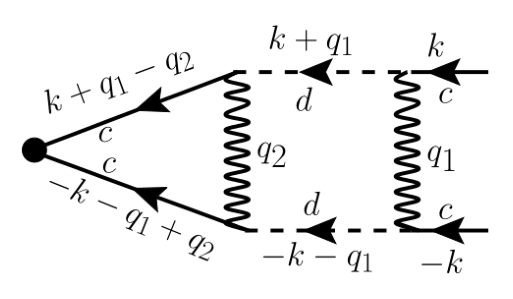
<figcaption class="paper-figure-caption"><b>Fig 3.</b> FIG. 3. The diagrammatic representation of the pairing vertex. The wavy lines represent the boson propagator. The solid and dashed straight lines represent Green’s functions corresponding to fermionic flavors of lower and upper bands, respectively.</figcaption>
</figure>
<figure class="paper-figure-card">
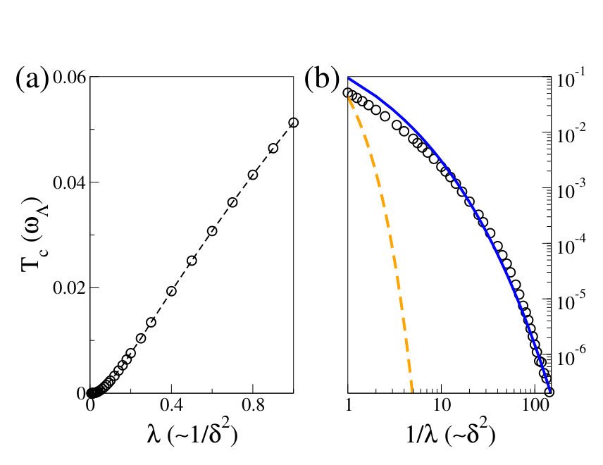
<figcaption class="paper-figure-caption"><b>Fig 4.</b> FIG. 4. Tc (in unit of ωΛ), derived from Eq. (16), as a function of coupling constant, λ in panel (a) and 1/λ in panel (b). The numerical solutions are shown as circles, with a black dashed line added as a guide to the eye. The solid blue line presents the solution of Eq. (18). The solution of BCS expression, (λ/π) log (ωΛ/T BCS c ) = 1, is depicted by the yellow dashed line.</figcaption>
</figure>
<figure class="paper-figure-card">
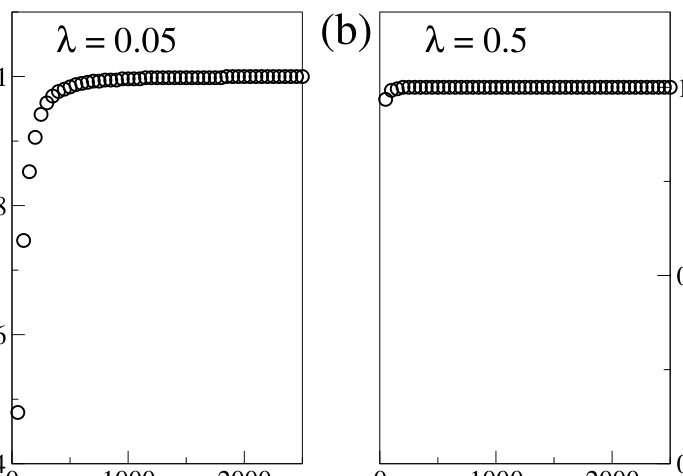
<figcaption class="paper-figure-caption"><b>Fig 5.</b> FIG. 5. The critical temperature T M c , evaluated as a function of frequency cutoff M, is normalized by its asymptotic value Tc, obtained at large M where it becomes independent of M. Panels (a) and (b) correspond to the coupling λ = 0.05 (Tc = 0.00056 ωΛ) and 0.5 (Tc = 0.025 ωΛ), respectively. Notably, for λ = 0.05, T M c converges to Tc at M ≥800, while for λ = 0.5, the convergence is already achieved at M ≥200.</figcaption>
</figure>
</div>

<p><strong>Summary.</strong> This paper develops a quantum critical Eliashberg theory for superconductivity in 2D ferroelectric quantum materials. It shows that an interband 'Stark'-like coupling generates an effective two-phonon interaction that significantly enhances the superconducting critical temperature ($T_c$) beyond standard BCS predictions. The results are highly relevant to understanding unconventional pairing mechanisms in layered oxides and TMDs.</p>
<p><strong>Why it may be interesting.</strong> The focus on strong electron-phonon coupling mediated by quantum critical fluctuations provides a rich theoretical framework relevant to understanding unconventional superconductivity in layered materials, which often involves complex electronic correlations.</p>
<details>
<summary>Detailed structure</summary>
<p><strong>Main problem.</strong> The study investigates superconductivity arising from ferroelectric quantum critical fluctuations in two dimensions, addressing the puzzle of enhanced SC when conventional electron-phonon coupling is suppressed.</p>
<p><strong>Main result.</strong> The superconducting critical temperature ($T_c$) is strongly enhanced relative to BCS expectations due to an effective two-phonon pairing mechanism mediated by interband coupling near a Quantum Critical Point (QCP).</p>
<p><strong>Method.</strong> The authors construct and solve the quantum critical Eliashberg theory for this 2D system, analyzing different limits of the interband gap.</p>
<p><strong>Model / system.</strong> The model uses a minimal two-band Hamiltonian describing electrons coupled to a 2D TO phonon mode in a Quantum Ferroelectric Metal (QFEM) near its QCP. The coupling mechanism is an interband 'Stark'-like interaction leading to effective quadratic (two-phonon) pairing.</p>
<p><strong>Key observables.</strong> Superconducting critical temperature ($T_c$), pairing kernel, and the gap equation solution.</p>
<p><strong>Important parameters / regimes.</strong> Interband gap magnitude ($\delta$), coupling constant ($\lambda$), dimensionality (2D vs 3D), and frequency cutoffs ($\Lambda\Omega$).</p>
<p><strong>Assumptions / limitations.</strong> The analysis relies on approximations in the large-gap and small-gap limits, treating the system near criticality, and assuming parabolic bands.</p>
<p><strong>Figures summary.</strong> Figures illustrate diagrammatic representations of the two-phonon process and plot $T_c$ versus coupling strength ($\lambda$) or inverse coupling strength ($1/\lambda$), comparing results to BCS scaling.</p>
<p><strong>Paper structure.</strong> The paper develops the theory by constructing the Eliashberg equations, analyzing the pairing vertex in both large-gap and small-gap regimes, and deriving explicit forms for $T_c$ that show parametric enhancement over standard BCS predictions.</p>
</details>
<details>
<summary>Abstract</summary>
<p>Soft critical fluctuations associated with ferroelectric quantum phase transitions are typically transverse owing to their polar nature. This implies that the conventional density--density electron--phonon coupling to these modes is strongly suppressed, which is puzzling as a variety of materials exhibit enhanced superconductivity in the vicinity of ferroelectricity. An alternative coupling mechanism is an interband ``Stark''-like coupling that connects bands of opposite parity. In the limit where one of the bands is far in energy, these processes generate an effective quadratic (two-phonon) coupling. In contrast, when both bands lie close to the Fermi energy, the resulting interaction develops singular behavior due to the additional gapless electronic states, motivating a detailed study into the dynamics of this effective two-phonon coupling. To this end, we construct the quantum critical Eliashberg theory for a two-dimensional system across a wide range of interband gap magnitudes, near the quantum critical point. We find that the critical temperature $T_c$ is strongly enhanced relative to conventional BCS expectations. In the large-gap limit, the pairing kernel acquires higher-order logarithmic contributions, leading to a parametrically enhanced $T_c$ governed by cubic and quadratic logarithmic terms. In the small-gap regime, the pairing scale exhibits a modified BCS-like form with an enhanced dependence on the inverse square root of the dimensionless coupling constant. The enhancement is due to the dynamics of the two-phonon pairing whose infrared cutoff is set by $T_c$, resulting in a significant enhancement of superconductivity compared to three-dimensional systems, where it is set by the Fermi energy. Our results elucidate the unique dynamical properties of effective two-phonon interactions, and may be relevant to layered compounds like Td-MoTe$_2$ and doped SrTiO$_3$ membranes.</p>
</details>
<p><sub><a href="#top">↑ back to top</a></sub></p>

<p><a id="paper-2606.17933"></a></p>
<h3 id="three-dimensional-repulsive-hubbard-model"><a href="http://arxiv.org/abs/2606.17933v1">Three-dimensional repulsive Hubbard model</a></h3>
<p><strong>Authors:</strong> Alexei Sherman<br>
<strong>Type:</strong> theory · <strong>Category:</strong> strongly correlated electrons · <strong>PDF:</strong> <a href="https://arxiv.org/pdf/2606.17933v1">https://arxiv.org/pdf/2606.17933v1</a><br>
<strong>Analysis basis:</strong> full PDF text, analyzed in chunks
<strong>Topic relevance:</strong> <code>analog quantum simulation</code> <strong>3/5</strong> · <code>Keldysh / 2PI / non-Gaussian methods</code> <strong>1/5</strong></p>
<div class="figure-strip-hint">↔ Scroll figures horizontally</div>
<div class="paper-figures-scroll">
<figure class="paper-figure-card">
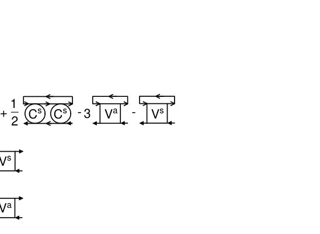
<figcaption class="paper-figure-caption"><b>Fig 1.</b> Fig. 1 (a) Diagrams taken into account in calculations of the irreducible part K(k, j). The circle with the notation C1 is the first-order cumulant, circles with notations Cs and Ca are symmetrized and antisymmetrized second-order cumulants, lines with open arrows are renormalized hopping θ(k, j), squares with notations V s and V a are infinite sums of ladder diagrams symmetrized and antisym- metrized over spin indices. The Bethe-Salpeter equations that they satisfy are depicted in parts (b) and (c).</figcaption>
</figure>
<figure class="paper-figure-card">
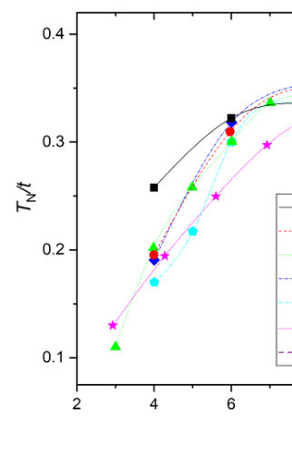
<figcaption class="paper-figure-caption"><b>Fig 2.</b> Fig. 3 The dependence of the N´eel temperature TN on the Hubbard repulsion U calculated with SCDT in a half-filled 83 lattice is shown by black squares. The comparison data are obtained by quantum Monte Carlo simulations [3] (red circles), the dual fermion approach [8] (green triangles), dynamic cluster approximation [6] (blue rhombi), determinantal diagrammatic Monte Carlo [9] (cyan pentagons), and dynamical vertex approximation [7] (magenta stars). The purple dashed line shows the Heisenberg limit TN = 3.83t2/U [15, 16].</figcaption>
</figure>
<figure class="paper-figure-card">

<figcaption class="paper-figure-caption"><b>Fig 3.</b> Fig. 5 The variation of TN with doping in the case U = 4t.</figcaption>
</figure>
<figure class="paper-figure-card">
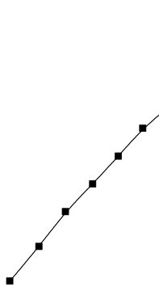
<figcaption class="paper-figure-caption"><b>Fig 4.</b> Fig. 4, one can see that the DOS at U = 4t differs essentially from spectra for larger repulsions. In the former case, the DOS is well separated into an intensive quasiparticle maximum with a dip near ω = 0 originating in part from the Hubbard repulsion and the Slater mechanism [30] and a less intensive higher-frequency electron-spin- excitation continuum. Such a type of DOS is inherent in weak coupling. For U ≥6t, it is difficult to separate the spectrum into these two parts – the case is typical for strong correlations. With their growth, the dip near ω = 0 goes down, and for U ≈9t it transforms into the Mott gap. Notice that we are dealing with the comparatively high temperature, TN...</figcaption>
</figure>
<figure class="paper-figure-card">
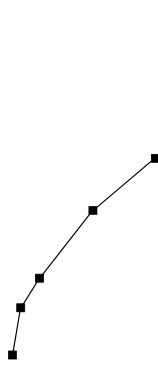
<figcaption class="paper-figure-caption"><b>Fig 5.</b> Fig. 6 The variation of TN with doping in the case U = 12t.</figcaption>
</figure>
</div>

<p><strong>Summary.</strong> This work applies the strong-coupling diagram technique to analyze the phase diagram of the 3D repulsive Hubbard model. It determines critical boundaries between paramagnetic and antiferromagnetic phases while investigating how the density of states evolves across different interaction strengths ($U$). The results highlight complex doping effects, such as plateaus in $T_N$ linked to spectral reconstruction.</p>
<p><strong>Why it may be interesting.</strong> The study provides detailed theoretical insights into fundamental many-body physics in strongly correlated electron systems, particularly concerning Mott transitions and magnetic ordering in 3D lattices.</p>
<details>
<summary>Detailed structure</summary>
<p><strong>Main problem.</strong> The study investigates the phase diagram of the three-dimensional repulsive Hubbard model, focusing on the transition between paramagnetic and antiferromagnetic states.</p>
<p><strong>Main result.</strong> The analysis reveals a Mott transition in the density of states around $U\approx9t$ and shows that doping dependence of the Néel temperature exhibits plateaus linked to changes in electron coupling strength.</p>
<p><strong>Method.</strong> The strong-coupling diagram technique (SCDT) is employed, involving series expansion in kinetic energy and solving coupled equations for spin and charge susceptibilities.</p>
<p><strong>Model / system.</strong> The system is the 3D repulsive Hubbard model on a simple cubic lattice, described by the Hamiltonian $  ext{H} = \sum_{\langle l l' 
angle\sigma} t_{ll'} (a^\dagger_{l'\sigma} a_{l\sigma} + h.c.) + U \sum_l n_{l\uparrow} n_{l\downarrow}$.</p>
<p><strong>Key observables.</strong> Néel temperature ($T_N$), Density of States (DOS), magnetic critical exponent ($\gamma$), and spin/charge susceptibilities.</p>
<p><strong>Important parameters / regimes.</strong> $U$ (Hubbard repulsion) relative to $t$ (hopping integral); electron concentration $ar{n}$; regimes like $4t \le U \le 12t$.</p>
<p><strong>Assumptions / limitations.</strong> The primary method relies on the strong-coupling diagram technique, which is most accurate for the limit where $U \gg t$.</p>
<p><strong>Figures summary.</strong> Figures illustrate the variation of $T_N$ with doping ($ar{n}$) showing plateaus (e.g., Fig. 6), and demonstrate how the DOS changes from weak-coupling quasiparticle features to strong-coupling Mott gaps depending on $ar{n}$ and $U$.</p>
<p><strong>Paper structure.</strong> The paper systematically analyzes phase boundaries ($T_N(U)$) using SCDT, calculates susceptibilities via determinant analysis ($\Delta(k, 
u)$), and examines how the DOS and critical exponents change as a function of both interaction strength ($U$) and doping ($ar{n}$).</p>
</details>
<details>
<summary>Abstract</summary>
<p>The three-dimensional repulsive Hubbard model is investigated using the strong-coupling diagram technique. For half-filling, the boundary between paramagnetic and antiferromagnetic states is determined for the range of the Hubbard repulsion $4t\leq U\leq12t$, where $t$ is the hopping integral between neighboring sites. Along this boundary, the density of states is calculated, and it demonstrates the Mott transition at $U\approx9t$. For $U\geq6t$ and half-filling, the density of states has the shape inherent in the strong electron repulsion, while for $U=4t$, its shape points to weak coupling. The dependence of the Néel temperature $T_{\rm N}$ on the electron concentration $\bar{n}$ is investigated for the cases $U=4t$ and $12t$. In the former case, $T_{\rm N}$ decreases monotonously with $\bar{n}$, while in the latter case, there is a plateau in the dependence near $\bar{n}=0.87$. The plateau is connected to a reconstruction of the density of states caused by an effective weakening of electron coupling due to electron depopulation. For $U=12t$ and half-filling, the magnetic critical exponent $γ\approx1.4$, which is close to the value in the Heisenberg model. Some features resembling the first-order phase transition, revealing themselves in a finite crystal, are discussed.</p>
</details>
<p><sub><a href="#top">↑ back to top</a></sub></p>

<p><a id="paper-2606.17305"></a></p>
<h3 id="ii-exploring-the-role-of-the-crystal-electric-field-in-the-vicinity-of-a-quantum-critical-point"><a href="http://arxiv.org/abs/2606.17305v1">II. Exploring the role of the Crystal Electric Field in the vicinity of a Quantum Critical Point</a></h3>
<p><strong>Authors:</strong> Julian G. Sereni, Ivan Curlik, Slavo Gabani, Mauro Giovannini<br>
<strong>Type:</strong> experiment · <strong>Category:</strong> strongly correlated electrons · <strong>PDF:</strong> <a href="https://arxiv.org/pdf/2606.17305v1">https://arxiv.org/pdf/2606.17305v1</a><br>
<strong>Analysis basis:</strong> full PDF text, analyzed in chunks
<strong>Topic relevance:</strong> <code>Kondo &amp; dissipative impurity</code> <strong>3/5</strong></p>
<div class="figure-strip-hint">↔ Scroll figures horizontally</div>
<div class="paper-figures-scroll">
<figure class="paper-figure-card">
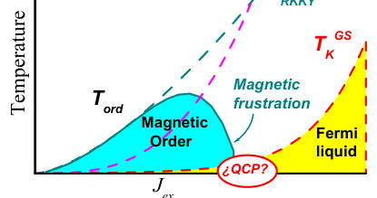
<figcaption class="paper-figure-caption"><b>Fig 1.</b> FIG. 1. Doniach-Lavagna phase diagram showing the differ- ent variation between the Kondo temperature: T CEF K (Jex), used in that model, and the actual ground state: T GS K . The magnetic phase boundary Tord ∝TRKKY [3] is proportional to the magnetic exchange interaction.</figcaption>
</figure>
<figure class="paper-figure-card">
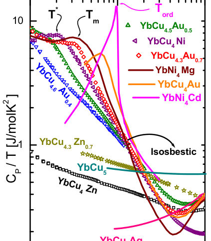
<figcaption class="paper-figure-caption"><b>Fig 2.</b> FIG. 2. (Color online) Comparison of the low temperature specific heat divided temperature of eight YbM4X com- pounds and alloys (M = Ni, Cu and X = Mg [17], Ni [12], Cu [20], Au [14], Zn [26]) lying in the vicinity of a QPC, in a double logarithmic representation. The alloy with Mx =Au0.6 is not included for clarity because its Cm/T(T) dependence coincides with that of X=Ni. Isosbestic point [27] at T ≈1.2 K: coincident temperature with the same en- tropy derivative.</figcaption>
</figure>
<figure class="paper-figure-card">
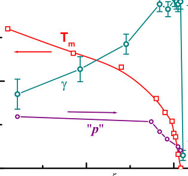
<figcaption class="paper-figure-caption"><b>Fig 3.</b> FIG. 3. (Color online) Left (red) axis: evolution of the Tm anomaly towards the QCP as a function of the chem- ical doping parameter ζ. Right (cian) axis: increase of the CP /T|lim T →0 extrapolation till to reach a maximum at the QCP and (purple) triangle: exponent ’p’ of the CP /T(T &gt; Tm) power laws dependence extracted from Fig 2.</figcaption>
</figure>
<figure class="paper-figure-card">
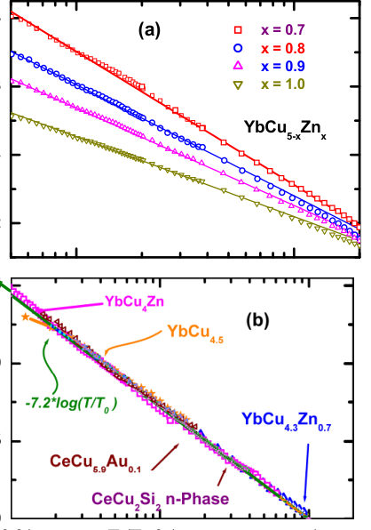
<figcaption class="paper-figure-caption"><b>Fig 4.</b> FIG. 4. (Color online) a) Logarithmic temperature depen- dence of YbCu5−xZnx alloys . b) Comparison of different NFL compounds within the normalized procedure [33] in- cluding two Ce-referent compounds after phonon subtrac- tion (see text).</figcaption>
</figure>
<figure class="paper-figure-card">
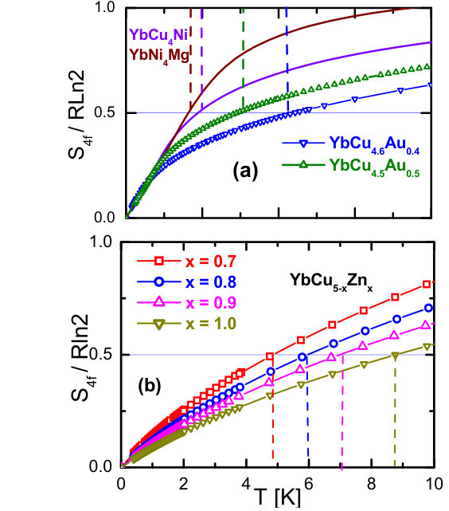
<figcaption class="paper-figure-caption"><b>Fig 5.</b> FIG. 5. (Color online) a) Evaluation of T GS K of some mag- netic alloys and compounds according to the Sm(T = TK) = 1/2RLn2 criterion. b) Same procedure for the T GS K deter- mination for YbCu5−xZnx alloys.</figcaption>
</figure>
</div>

<p><strong>Summary.</strong> This paper investigates the role of Crystal Electric Field splitting in understanding Quantum Critical Points within Yb-based compounds. By analyzing low-temperature specific heat measurements across doping series, the authors refine existing phase diagrams. They conclude that the QCP is better understood as a crossover dominated by quantum fluctuations rather than a singular point defined by diverging thermodynamic quantities.</p>
<p><strong>Why it may be interesting.</strong> This work provides detailed experimental evidence on how crystal field effects modify the expected critical behavior near magnetic quantum criticality in heavy fermion systems, offering insights into the nature of quantum fluctuations beyond simple mean-field models.</p>
<details>
<summary>Detailed structure</summary>
<p><strong>Main problem.</strong> The study explores how Crystal Electric Field (CEF) splitting modifies the understanding of Quantum Critical Points (QCPs) when a system transitions between magnetic and Fermi-liquid ground states.</p>
<p><strong>Main result.</strong> The analysis suggests that the QCP region is better described as a crossover dominated by low-lying quantum fluctuations, rather than a singularity characterized by divergences in specific heat measurements.</p>
<p><strong>Method.</strong> The research analyzes very low temperature thermodynamic properties, particularly the specific heat divided by temperature (C4f/T), across various doping levels within the YbT4M family of compounds.</p>
<p><strong>Model / system.</strong> The physical platform is the YbT4M family of intermetallic compounds. The theoretical framework improves upon the Doniach-Lavagna phase diagram by explicitly incorporating CEF splittings to model the competition between magnetic ordering, Kondo screening, and valence fluctuations.</p>
<p><strong>Key observables.</strong> Specific heat divided by temperature (C4f/T), which exhibits power law dependencies, logarithmic divergences ($\propto \ln(T/T_0)$), or near-constant behavior depending on the electronic regime.</p>
<p><strong>Important parameters / regimes.</strong> The key parameters include the Kondo temperature ($T_K$), the magnetic ordering temperature ($T_m$), and the CEF splitting energy ($\Delta_{	ext{CEF}}$). The doping level acts as a control parameter mapping out different regimes.</p>
<p><strong>Assumptions / limitations.</strong> Early models' predictions of divergences at the QCP are revised; instead, the transition is characterized by a clear drop in $C_{4f}/T$ towards zero temperature.</p>
<p><strong>Figures summary.</strong> Figures illustrate phase diagrams (e.g., magnetic vs. non-magnetic regions) and plot C4f/T versus temperature for various doped alloys to map out distinct physical regimes.</p>
<p><strong>Paper structure.</strong> The paper systematically analyzes the low-temperature behavior across three identified regimes—magnetic, non-Fermi liquid, and valence fluctuation—using doping as a tuning parameter to construct a more realistic phase diagram around the QCP.</p>
</details>
<details>
<summary>Abstract</summary>
<p>Very low temperature thermdynamic properties of the Yb$T_4M$ family of compounds are analyzed in a broad range of behavior including a quantum critical point QCP between magnetic and Fermi-liquid ground states GS. Doniach-Lavagna phase diagram limitations are improved by taking into account crystal electric field CEF splittings. The studied alloys: Yb$T_{5-x}M_x$ (with $T$= Ni, Cu, and $M$= Cd, Mg, Pd, Au, Zn, Ag), allow to gain insight into the evolution of the GS behavior undergoing the QCP region as a function of chemical doping as control parameter. Three types of behaviors are recognized in this system: i) a magnetic one, with weak interactions at $T_m\leq 1$\,K and very low Kondo temperature of their respective doublets GS. Between $T_m$ and $T_q\approx 0.3$\,K, quantum fluctuations start to dominate the scenario with the specific heat $C_{4f}/T(T\geq T_q)$ showing $T$ power law dependencies and a very heavy-fermion {\it plateau} below $T_q$. ii) beyond the QCP the typical non-fermi-liquid logarithmic $T$ dependence: $C_{4f}/T \propto \ln(T/T_0)$ and iii) at the non-magnetic limit, the alloys behave as valence-fluctuation systems with $T_K$ overcoming the CEF splitting. With this experimental information, a more realistic phase diagram can be drawn around the QCP where the scenario is dominated by low lying quantum fluctuations, without $C_{4f}/T|_{Lim T\to 0}$ divergences but a clear drop of its value.</p>
</details>
<p><sub><a href="#top">↑ back to top</a></sub></p>

<p><a id="paper-2606.17161"></a></p>
<h3 id="the-helical-syk-model-and-emergent-infrared-integrability"><a href="http://arxiv.org/abs/2606.17161v1">The Helical SYK Model and Emergent Infrared Integrability</a></h3>
<p><strong>Authors:</strong> Gustavo Valdivia-Mera, Bhavay Tyagi, Eric R. Bittner, Pavan Hosur<br>
<strong>Type:</strong> theory · <strong>Category:</strong> statistical mechanics · <strong>PDF:</strong> <a href="https://arxiv.org/pdf/2606.17161v1">https://arxiv.org/pdf/2606.17161v1</a><br>
<strong>Analysis basis:</strong> full PDF text, analyzed in chunks
<strong>Topic relevance:</strong> <code>Keldysh / 2PI / non-Gaussian methods</code> <strong>2/5</strong> · <code>non-equilibrium dynamics</code> <strong>2/5</strong> · <code>Kondo &amp; dissipative impurity</code> <strong>1/5</strong> · <code>analog quantum simulation</code> <strong>1/5</strong> · <code>correlated / nonlocal dissipation</code> <strong>1/5</strong> · <code>driven-dissipative phase transition</code> <strong>1/5</strong> · <code>entanglement &amp; information structure</code> <strong>1/5</strong> · <code>methods for driven-dissipative</code> <strong>1/5</strong> · <code>non-equilibrium universality</code> <strong>1/5</strong> · <code>scars &amp; prethermalization</code> <strong>1/5</strong></p>
<div class="figure-strip-hint">↔ Scroll figures horizontally</div>
<div class="paper-figures-scroll">
<figure class="paper-figure-card">

<figcaption class="paper-figure-caption"><b>Fig 1.</b> Figure 1: (a)-(f) correspond to the six graphical large-N counting classes for the primitive tensor structures. Only the conjugate pair shown in panel (f) scales as N7. All other representative classes are subleading.</figcaption>
</figure>
</div>

<p><strong>Summary.</strong> This paper analyzes a helical generalization of the SYK model, exploring how its random quartic interactions behave under renormalization group flow. While generic couplings destroy initial integrability, the disorder-averaged large-$N$ limit forces the system back to an exactly solvable, free, and integrable state in the infrared regime.</p>
<p><strong>Why it may be interesting.</strong> The connection between random interactions (disorder) and emergent exact solvability in the deep infrared limit is a powerful concept relevant to understanding thermalization and quantum chaos in many-body systems, which has parallels in AMO physics when studying complex interacting regimes.</p>
<details>
<summary>Detailed structure</summary>
<p><strong>Main problem.</strong> The research investigates the emergence of infrared (IR) integrability in a generalized, random-coupled quantum chaotic model.</p>
<p><strong>Main result.</strong> In the disorder-averaged large-$N$ IR limit, the theory re-emerges as integrable because all quartic interactions flow to zero due to conformal perturbation theory analysis. The system is exactly solvable when restricted by symmetries or in this deep IR limit.</p>
<p><strong>Method.</strong> The study employs bosonization, Conformal Perturbation Theory (CPT), and Renormalization Group (RG) flow analysis on a generalized Sachdev-Ye-Kitaev (SYK) model.</p>
<p><strong>Model / system.</strong> The system is a $1+1$ dimensional helical generalization of the SYK model built from left- and right-moving Majorana fermions with random quartic couplings in flavor-chirality space. The Hamiltonian structure is analyzed across various symmetry constraints, ranging from maximally symmetric to fully general.</p>
<p><strong>Key observables.</strong> The primary observables are the RG flow coefficients (beta functions) determining coupling strength evolution, and the resulting physical energy density ($\epsilon_{	ext{phys}}$) in solvable limits.</p>
<p><strong>Important parameters / regimes.</strong> Key parameters include the system size $N$, the disorder strengths $J_S$, and the dimensionality ($1+1$ dimensions). The analysis focuses on the large-$N$ limit.</p>
<p><strong>Assumptions / limitations.</strong> The analysis assumes Gaussian random couplings for disorder averaging, relies on separating symmetry-constrained sectors from the full interaction space, and uses CPT around a free fixed point.</p>
<p><strong>Figures summary.</strong> Figures likely summarize the hierarchy of symmetries constraining interactions (Table 2) and illustrate the flow equations or diagonalization results for normal modes.</p>
<p><strong>Paper structure.</strong> The paper progresses by first establishing the highly symmetric, exactly integrable sector via bosonization. It then analyzes how relaxing symmetries expands the interaction space. The core is the RG analysis showing that disorder averaging forces the system back to an IR fixed point where integrability is recovered through marginal irrelevance.</p>
</details>
<details>
<summary>Abstract</summary>
<p>We construct a helical generalization of the Sachdev-Ye-Kitaev (SYK) model in $1+1$ dimensions, built from left- and right-moving Majorana fermions with local quartic interactions and random couplings in flavor-chirality space. These interactions organize into a symmetry-controlled hierarchy of quartic chirality sectors. At the most restrictive end of this hierarchy, symmetry forces the quartic structure into a density-density form, which admits an exact solution using bosonization, rendering the theory integrable. Once the full quartic helical interaction space is allowed, including purely chiral, chirality-balanced, and chirality-imbalanced sectors, this symmetry-protected integrable structure is lost. Nevertheless, the large-$N$ infrared limit remains analytically tractable through short-distance selection rules and disorder averaging. Using conformal perturbation theory about the free fixed point, we show that the entire interaction space is marginally irrelevant, and the theory thus becomes free and integrable in the IR.</p>
</details>
<p><sub><a href="#top">↑ back to top</a></sub></p>

<p><a id="paper-2606.18161"></a></p>
<h3 id="closest-accessible-symmetry-reduction-a-tool-for-hamiltonian-interpolation-analysis"><a href="http://arxiv.org/abs/2606.18161v1">Closest Accessible Symmetry reduction: a tool for Hamiltonian interpolation analysis</a></h3>
<p><strong>Authors:</strong> Ana Palacios, Artur Garcia-Saez, Arnau Riera, Marta P. Estarellas<br>
<strong>Type:</strong> theory · <strong>Category:</strong> statistical mechanics · <strong>PDF:</strong> <a href="https://arxiv.org/pdf/2606.18161v1">https://arxiv.org/pdf/2606.18161v1</a><br>
<strong>Analysis basis:</strong> full PDF text, analyzed in chunks
<strong>Topic relevance:</strong> <code>analog quantum simulation</code> <strong>2/5</strong> · <code>non-equilibrium dynamics</code> <strong>2/5</strong> · <code>Keldysh / 2PI / non-Gaussian methods</code> <strong>1/5</strong> · <code>driven-dissipative phase transition</code> <strong>1/5</strong> · <code>entanglement &amp; information structure</code> <strong>1/5</strong> · <code>methods for driven-dissipative</code> <strong>1/5</strong> · <code>non-equilibrium universality</code> <strong>1/5</strong></p>
<div class="figure-strip-hint">↔ Scroll figures horizontally</div>
<div class="paper-figures-scroll">
<figure class="paper-figure-card">

<figcaption class="paper-figure-caption"><b>Fig 1.</b> Figure 1. Illustration of the consecutive block reduction process of H(r), where in each iteration r every block is split in half. Consequently, every iteration a set of {P (r) 0,(η), M (r) A,(η), M (r) B,(η)}2r−1 η=0 is found.</figcaption>
</figure>
<figure class="paper-figure-card">

<figcaption class="paper-figure-caption"><b>Fig 2.</b> Figure 2. Illustration of the possible ways to generate a Z2 symmetry in H(s) for A, B of the shape in Eqs. (35) and (36), respectively. Dotted lines represent the elimination of said terms (i.e., their inclusion in ν), and the illustration labelled as “original” is the one corresponding to the full representa- tion of H(s) as per Eq. (7).</figcaption>
</figure>
<figure class="paper-figure-card">

<figcaption class="paper-figure-caption"><b>Fig 3.</b> Figure 3. Fidelity between the first four pseudo-eigenspaces ˜Πk and the true eigenspaces Πk of the system, where the pseudo-eigenspaces are labelled according to their ordering at s = 1. The inset shows the true spectrum (dashed lines) and the pseudo-spectrum (solid) for this particular instance.</figcaption>
</figure>
<figure class="paper-figure-card">

<figcaption class="paper-figure-caption"><b>Fig 4.</b> Figure 5. Simulation of the N = 101 frustrated Ising ring described in the main text without any biasing weights (top row, a, c, e) and with a bias towards minimising the error around the middle according to Eq. (37) (bottom row, b, d, f). The vertical black dotted lines mark sc and smin, and the vertical blue dashed lines indicate their respective predictions from the pseudo-spectra (smin on the top row, sc on the bottom one). Plots a), b) show the hybridisations for all the pairs of the lowest four pseudo-levels for every s, where the horizontal dashed line indicates χ∗= 0.5 and we don’t show values above 103 or below 10−3 to improve visibility. The insets in a), b) present a zoom-in onto...</figcaption>
</figure>
<figure class="paper-figure-card">

<figcaption class="paper-figure-caption"><b>Fig 5.</b> Figure 6. Simulation of the N = 101 frustrated Ising ring where the optimiser considered minimising the integral of C (Eq. (B1)), without biasing weights. The vertical black lines mark the true transition points sc (dotted) and smin (dashed), while their blue counterparts mark the locations predicted by the pseudo-spectrum. Figure a) shows the hybridisation between all pairs within the lowest four pseudo-levels, with a close-up around the true sc shown in the inset. Plot b) shows the upper bound C on the 2-norm of the off-diagonals (see Eq. (23)) that connects the different pairs of the four lowest-lying pseudo-eigenstates. Since all the nontrivial CAS symmetries found were of type I, in...</figcaption>
</figure>
</div>

<p><strong>Summary.</strong> The paper introduces the Closest Accessible Symmetry (CAS) reduction method to analyze how the energy spectrum of many-body quantum systems changes during Hamiltonian interpolation. By systematically projecting the system onto symmetry-constrained subspaces, it avoids numerical discretization while accurately predicting critical points and characterizing phase transitions via pseudo-spectra and hybridization analysis.</p>
<p><strong>Why it may be interesting.</strong> This work provides a powerful theoretical tool for analyzing quantum dynamics across phase transitions, offering insights into spectral reorganization that are complementary to standard time-stepping or local approximation methods.</p>
<details>
<summary>Detailed structure</summary>
<p><strong>Main problem.</strong> The primary goal is to develop a systematic framework for analyzing the energy spectrum of Hamiltonian interpolations between two Hamiltonians without relying on discretizing the interpolation parameter.</p>
<p><strong>Main result.</strong> The Closest Accessible Symmetry (CAS) reduction provides a hierarchical, non-discretized method to approximate the pseudo-spectrum and locate quantum phase transitions by tracking spectral reorganization across the entire path.</p>
<p><strong>Method.</strong> The core technique involves projecting the interpolating Hamiltonian onto subspaces defined by accessible symmetries, yielding weakly coupled pseudo-eigenspaces whose coupling strengths are analyzed using hybridization criteria.</p>
<p><strong>Model / system.</strong> The analysis is applied to general many-body quantum systems undergoing adiabatic evolution, exemplified by the frustrated Ising ring model and linear interpolations between Hamiltonians A and B.</p>
<p><strong>Key observables.</strong> Quantum phase transition locations (gap closing), pseudo-spectrum $\{\mu_k\}$, hybridization strength $\chi_{kj}$, and spectral gap bounds ($\Delta$ vs. $  ilde{\Delta}$).</p>
<p><strong>Important parameters / regimes.</strong> The interpolation parameter $s \in [0, 1]$, the structure of accessible symmetries (e.g., single-Pauli string symmetries), and the cost function used to select the optimal symmetry reduction.</p>
<p><strong>Assumptions / limitations.</strong> The quality of the approximation depends on the compatibility between the chosen accessible symmetry family and the physical problem instance; the method relies on restricting the search space to tractable symmetry generators.</p>
<p><strong>Figures summary.</strong> Figures illustrate how different types of symmetries ($\mathbb{Z}_2$) can be generated by removing terms from $H(s)$, show fidelity comparisons between pseudo-eigenstates and true eigenstates, and plot spectral gap behavior across phase transitions for the Ising model.</p>
<p><strong>Paper structure.</strong> The paper introduces the CAS framework, details its application to linear interpolations using symmetry constraints (Types I-IV), develops diagnostic tools like hybridization criteria ($\chi_{kj}$), and compares different optimization strategies (max-cost vs. average cost) on benchmark models.</p>
</details>
<details>
<summary>Abstract</summary>
<p>We introduce a framework for analysing the spectrum of Hamiltonian interpolations without heavily relying on discretising the interpolation parameter. The method is based on the concept of accessible symmetries: a problem-class-dependent family of certifiable reflections that induce bipartitions of the Hilbert space. At each step, the interpolation Hamiltonian is projected onto the sectors of the accessible symmetry that is closest to being satisfied, yielding a hierarchy of weakly coupled pseudo-eigenspaces together with explicit residual couplings between them. We show that this representation captures qualitative signatures of quantum phase transitions, provides estimates of their location, and offers insights into their nature. The quality of the approximation is controlled by the compatibility between the accessible symmetry family and the problem instance. Although motivated in spirit by adiabatic quantum computation, our approach applies more broadly to the study of Hamiltonian phase diagrams, providing a new perspective on the spectral reorganisation of many-body quantum systems.</p>
</details>
<p><sub><a href="#top">↑ back to top</a></sub></p>

<p><a id="paper-2606.17532"></a></p>
<h3 id="hyperuniform-charge-distributions-and-phase-transitions-in-a-generalized-aubry-andre-model"><a href="http://arxiv.org/abs/2606.17532v1">Hyperuniform charge distributions and phase transitions in a generalized Aubry-André model</a></h3>
<p><strong>Authors:</strong> Lujia Xiang, Junmo Jeon, Shiro Sakai<br>
<strong>Type:</strong> theory · <strong>Category:</strong> disordered systems and neural networks · <strong>PDF:</strong> <a href="https://arxiv.org/pdf/2606.17532v1">https://arxiv.org/pdf/2606.17532v1</a><br>
<strong>Analysis basis:</strong> full PDF text, analyzed in chunks
<strong>Topic relevance:</strong> <code>driven-dissipative phase transition</code> <strong>2/5</strong> · <code>non-equilibrium universality</code> <strong>2/5</strong> · <code>Frenkel-Kontorova</code> <strong>1/5</strong> · <code>analog quantum simulation</code> <strong>1/5</strong> · <code>correlated cavity matter</code> <strong>1/5</strong> · <code>non-equilibrium dynamics</code> <strong>1/5</strong></p>
<div class="figure-strip-hint">↔ Scroll figures horizontally</div>
<div class="paper-figures-scroll">
<figure class="paper-figure-card">

<figcaption class="paper-figure-caption"><b>Fig 1.</b> FIG. 1: Localization characteristics of single-particle eigenstates in the GAA model for λ = 2.5. (a) Landscape of fractal dimension Df, where gold (black) color indicates extended (localized) states. Gray dashed curves represent the mobility edges, and colored solid curves indicate the Fermi energies EF for different filling fractions ν. Different symbols are used to indicate representative (α, ν) points in the regions with different characteristics. In gapped regions, squares (diamonds) denote cases where the lowest unoccupied and highest occupied states have the same (different) localization properties. In gapless regions, circles (triangles) denote extended (localized) states at EF ....</figcaption>
</figure>
<figure class="paper-figure-card">

<figcaption class="paper-figure-caption"><b>Fig 2.</b> FIG. 2: Hyperuniformity classification of the GAA model for λ = 2.5. For different (α, ν) points indicated by different symbols in Fig. 1(a), (a)–(d) the charge-density distributions, (e)–(h) log-log plot of A(R) as a function of R and (i)–(l) ¯B(R) as a function of R. The first and second (third and fourth) columns represent the cases of gapped (gapless) phases. In gapped phases, (a,e,i) represent cases where the states just above and below the Fermi energy share identical localization properties (both extended or both localized), while (b,f,j) represent mixed cases (one extended and one localized). For gapless phases, (c,g,k) represent cases where the states around the Fermi energy are...</figcaption>
</figure>
<figure class="paper-figure-card">

<figcaption class="paper-figure-caption"><b>Fig 3.</b> FIG. 3: (a) Charge-density distribution and (b) ¯B(R) when the mobility edge is located between the highest occupied and lowest unoccupied states, for ν = 2/3, λ = 2.5 and α = −0.25649024.</figcaption>
</figure>
<figure class="paper-figure-card">

<figcaption class="paper-figure-caption"><b>Fig 4.</b> FIG. 4: (a) Fractal dimension Df landscape for λ = 1.5. Gray dashed curves denote the mobility edges. Four representative (α, ν) points in the gapless phases are marked by the symbols in the panel (a). For those points, (b,c) the charge-density distributions (d,e) log-log plot of A(R) as a function of R and (f,g) ¯B(R) as a function of R. Panels (b,d,f) represent cases where the states around the Fermi energy are extended, while (c,e,g) represent cases where those states are localized.</figcaption>
</figure>
<figure class="paper-figure-card">

<figcaption class="paper-figure-caption"><b>Fig 5.</b> FIG. 6: Fractal dimension Df and partial derivatives of the total energy per site Etot across the transition between class-I and class-II HU at filling fraction ν = 2/3. (a) Dependence on α at fixed λ = 2.5. (b) Dependence on λ at fixed α = 0.3. The top panels show Df of the highest occupied state, while the bottom panels show the second and third derivatives of Etot with respect to the tuning parameter. The yellow (gray) background color indicates the class-I (-II) HU.</figcaption>
</figure>
</div>

<p><strong>Summary.</strong> This work applies the concept of Hyperuniformity (HU) to analyze charge distributions in the generalized Aubry-André model on aperiodic lattices. It demonstrates that while all distributions are hyperuniform, their specific HU class acts as a fingerprint revealing whether the system is gapped or gapless and how single-particle states localize near the Fermi energy. This framework successfully identifies third-order phase transitions between different insulating many-body states.</p>
<p><strong>Why it may be interesting.</strong> The use of Hyperuniformity as a universal diagnostic tool to classify quantum phase transitions—especially distinguishing between spectral and mobility gaps—provides a powerful, non-traditional metric for condensed matter theory.</p>
<details>
<summary>Detailed structure</summary>
<p><strong>Main problem.</strong> To characterize phase transitions in inhomogeneous electron distributions within aperiodic systems, moving beyond classification based solely on symmetry or topology.</p>
<p><strong>Main result.</strong> The many-body charge distribution is always hyperuniform, but its specific class (I, II, or III) changes across different phases. This change signals a third-order phase transition linked to the localization properties of single-particle states near the Fermi energy.</p>
<p><strong>Method.</strong> Analysis relies on quantifying global uniformity using Hyperuniformity (HU), derived from scaling behaviors of charge density correlation functions ($ar{B}(R)$) and structure factors ($S(k)$).</p>
<p><strong>Model / system.</strong> The study uses the Generalized Aubry-André (GAA) model, a tight-binding Hamiltonian applied to an aperiodic lattice. This model is chosen because it supports both localized and extended single-particle states via a mobility edge.</p>
<p><strong>Key observables.</strong> Hyperuniformity class (Class I vs. Class II), charge density ($\mathbf{n_i}$), Inverse Participation Ratio (IPR), and fractal dimension ($D_f$).</p>
<p><strong>Important parameters / regimes.</strong> Filling fraction ($
u$), potential strength ($\lambda$), and the location of the Fermi energy ($E_F$) relative to mobility edges.</p>
<p><strong>Assumptions / limitations.</strong> The analysis assumes that the HU class provides a robust diagnostic tool for distinguishing between spectral gap and mobility gap origins of insulation. The framework is noted to neglect full quantum fluctuations in certain regimes.</p>
<p><strong>Figures summary.</strong> Figures illustrate the dependence of $ar{B}(R)$ on localization scenarios, showing distinct Class-I (extended) vs. Class-II (localized) behavior; they also map out $D_f$ landscapes and confirm third-order transitions via energy derivative analysis.</p>
<p><strong>Paper structure.</strong> The paper systematically introduces the GAA model and HU diagnostics, first establishing that charge distributions are always hyperuniform. It then contrasts gapped phases (always Class-I) with gapless phases, where the class depends critically on whether the Fermi level intersects localized or extended single-particle states, culminating in a third-order transition diagnosis.</p>
</details>
<details>
<summary>Abstract</summary>
<p>We show the existence of distinct inhomogeneous charge distributions and a phase transition between them in aperiodic fermion systems. Using a generalized Aubry-André model as an example, we obtain various types of charge distributions, which we classify by means of hyperuniformity, a general mean to quantify and classify the global uniformity of spatial distributions. Examining various cases of filling fraction and potential strength and shape, we find that the many-body charge distribution in this model is always hyperuniform, i.e., showing an anomalously suppressed long-range fluctuation, while its hyperuniformity class depends on the localization properties of the states around the Fermi energy, irrespective of those of high-energy states. Namely, the change in the localization properties of these single-particle states leaves a signature in the hyperuniformity class of many-body charge distribution. We further show a change of the hyperuniformity class corresponds to a phase transition between inhomogeneous many-body states, and that it is of the third order.</p>
</details>
<p><sub><a href="#top">↑ back to top</a></sub></p>

<p><a id="paper-2606.18040"></a></p>
<h3 id="full-state-information-disturbance-tradeoff-for-direction-estimation-with-antiparallel-spin-coherent-pairs"><a href="http://arxiv.org/abs/2606.18040v1">Full-state information-disturbance tradeoff for direction estimation with antiparallel spin-coherent pairs</a></h3>
<p><strong>Authors:</strong> Massimiliano F. Sacchi<br>
<strong>Type:</strong> theory · <strong>Category:</strong> quantum information and computing · <strong>PDF:</strong> <a href="https://arxiv.org/pdf/2606.18040v1">https://arxiv.org/pdf/2606.18040v1</a><br>
<strong>Analysis basis:</strong> full PDF text, analyzed in chunks
<strong>Topic relevance:</strong> <code>entanglement &amp; information structure</code> <strong>2/5</strong> · <code>quantum measurements</code> <strong>2/5</strong> · <code>exotic spin models in light-matter</code> <strong>1/5</strong> · <code>measurement-induced transitions</code> <strong>1/5</strong> · <code>spintronics-quantum-optics interface</code> <strong>1/5</strong></p>
<div class="figure-strip-hint">↔ Scroll figures horizontally</div>
<div class="paper-figures-scroll">
<figure class="paper-figure-card">

<figcaption class="paper-figure-caption"><b>Fig 1.</b> FIG. 1. Optimal information–disturbance tradeoffs for two-spin direction encoding. The solid curve is the antiparallel spin-1/2 case obtained from the two-sector dual-kernel construction. The dashed curve is the parallel-spin benchmark, equivalent to the irreducible spin-J = 1 spin-coherent-state problem. The markers denote the fully informative endpoints.</figcaption>
</figure>
<figure class="paper-figure-card">

<figcaption class="paper-figure-caption"><b>Fig 2.</b> FIG. 2. Normalized squared traces of the Kraus seeds along the optimal tradeoffs for two spin-1/2 particles. The solid curve is the antiparallel encoding, with t(I) = | Tr X(I)|2/4; the dashed curve is the parallel encoding, with t(I∥) = | Tr χ(I∥)|2/3.</figcaption>
</figure>
<figure class="paper-figure-card">

<figcaption class="paper-figure-caption"><b>Fig 3.</b> FIG. 3. Optimal information–disturbance tradeoffs for two-spin direction encoding with j = 1. The solid curve is the antiparallel encoding, obtained from the three-sector dual-kernel construction for 1⊗1 ≃0⊕1⊕2. The dashed curve is the parallel encoding, equivalent to the irreducible spin-J = 2 spin-coherent-state problem. The markers denote the fully informative endpoints.</figcaption>
</figure>
<figure class="paper-figure-card">

<figcaption class="paper-figure-caption"><b>Fig 4.</b> FIG. 4. Endpoint comparison for antiparallel and parallel spin-coherent encodings as a function of the spin j. Solid curves with circles denote the antiparallel encoding, and dashed curves with squares denote the parallel encoding. Panel (a) shows the maximum directional information. Panel (b) shows the antiparallel endpoint disturbance obtained after optimizing the output state for the maximum-information POVM; it remains substantially below the parallel one. The antiparallel curve is not strictly monotone; it displays a shallow minimum at intermediate spin.</figcaption>
</figure>
</div>

<p><strong>Summary.</strong> This theoretical paper analyzes the optimal information-disturbance tradeoff for estimating direction using two coupled quantum spins. By comparing antiparallel versus parallel spin encodings, the authors prove that the antiparallel configuration yields superior performance in both maximizing directional information and minimizing measurement backaction (disturbance). The results are generalized to arbitrary spin $j$ and analyzed asymptotically.</p>
<p><strong>Why it may be interesting.</strong> This work provides rigorous quantitative bounds on fundamental resource trade-offs (information vs. disturbance) in quantum metrology, offering concrete advantages of specific physical encoding schemes (antiparallel spins) over simpler ones.</p>
<details>
<summary>Detailed structure</summary>
<p><strong>Main problem.</strong> The paper determines the optimal trade-off between extracting directional information and disturbing the quantum state when estimating an unknown spatial direction encoded in two antiparallel spins.</p>
<p><strong>Main result.</strong> For antiparallel encoding, the system consistently achieves both higher directional information and lower output disturbance compared to parallel spin encodings across all analyzed spin values ($j$).</p>
<p><strong>Method.</strong> The problem is formulated using covariant quantum instruments and solved via semidefinite programming (SDP) techniques applied to a Choi seed operator. The analysis extends from finite-dimensional matrix calculations to asymptotic limits for large spins.</p>
<p><strong>Model / system.</strong> The system involves two physical spin-$j$ particles whose state encodes directional information, analyzed by comparing antiparallel and parallel spin-coherent pairs. The mathematical framework utilizes group averaging over covariant orbits on the sphere.</p>
<p><strong>Key observables.</strong> Directional Information ($I$), Full-state Operation Fidelity ($F$), and Disturbance ($D = 1 - F$).</p>
<p><strong>Important parameters / regimes.</strong> Spin quantum number $j$, which is generalized from spin-1/2 to arbitrary $j$. The large-$j$ limit provides asymptotic bounds for the tradeoff.</p>
<p><strong>Assumptions / limitations.</strong> The analysis relies on rotational invariance, restricting the optimal measurement strategy to covariant instruments. For endpoint calculations, specific POVMs are fixed, simplifying the optimization compared to the full continuous problem.</p>
<p><strong>Figures summary.</strong> Figures compare the optimal I-D tradeoffs for antiparallel vs. parallel encodings as a function of spin $j$, showing quantitative advantages for the antiparallel case in both information gain and disturbance reduction.</p>
<p><strong>Paper structure.</strong> The paper builds from foundational concepts (covariant instruments, SDP formulation) to specific calculations for spin-1/2, then generalizes these results to arbitrary spin $j$. The structure culminates in deriving asymptotic limits using advanced mathematical techniques like Bessel functions.</p>
</details>
<details>
<summary>Abstract</summary>
<p>We determine the optimal information--disturbance tradeoff for estimating an unknown spatial direction encoded in two antiparallel spins. Rotational covariance reduces the optimization over all instruments to a finite-dimensional Choi problem: a positive seed operator obeys one trace constraint for each irreducible sector of the input representation, while both the directional score and the operation fidelity are linear functionals of this seed. For two antiparallel spin-$1/2$ particles, whose physical representation decomposes as $0\oplus1$, we derive the two-multiplier dual problem and characterize the optimal instrument from the kernel vectors of the dual slack operator. The optimal operation is a covariant filter with scalar--vector coherence and is generally not a convex interpolation between the identity channel and a measure-and-reprepare strategy. At maximum information we recover the Gisin--Popescu score, but the least disturbing output state is optimized independently, giving a smaller disturbance than both the parallel-spin benchmark and antiparallel measure-and-reprepare. We also formulate the parallel benchmark and, as a central extension of the method, treat antiparallel spin-coherent states of arbitrary spin $j$. In this case the signal coherently occupies all sectors $\ell=0,\ldots,2j$ of $j\otimes j$, the endpoint information is governed by nearest-neighbor sector coherences, and the endpoint disturbance is obtained from an explicit finite block-diagonal eigenvalue problem.</p>
</details>
<p><sub><a href="#top">↑ back to top</a></sub></p>

<p><a id="paper-2606.17495"></a></p>
<h3 id="impact-of-network-constraints-on-fault-tolerant-distributed-quantum-computing"><a href="http://arxiv.org/abs/2606.17495v1">Impact of Network Constraints on Fault-Tolerant Distributed Quantum Computing</a></h3>
<p><strong>Authors:</strong> Eneet Kaur, Shahrooz Pouryousef, Nitish Kumar Chandra, Hassan Shapourian, Jiapeng Zhao, Ramana Kompella, Reza Nejabati<br>
<strong>Type:</strong> theory · <strong>Category:</strong> quantum information and computing · <strong>PDF:</strong> <a href="https://arxiv.org/pdf/2606.17495v1">https://arxiv.org/pdf/2606.17495v1</a><br>
<strong>Analysis basis:</strong> full PDF text, analyzed in chunks
<strong>Topic relevance:</strong> <code>QC/QI experiment</code> <strong>2/5</strong> · <code>correlated / nonlocal dissipation</code> <strong>1/5</strong> · <code>driven-dissipative phase transition</code> <strong>1/5</strong> · <code>entanglement &amp; information structure</code> <strong>1/5</strong> · <code>methods for driven-dissipative</code> <strong>1/5</strong> · <code>non-equilibrium dynamics</code> <strong>1/5</strong></p>
<div class="figure-strip-hint">↔ Scroll figures horizontally</div>
<div class="paper-figures-scroll">
<figure class="paper-figure-card">

<figcaption class="paper-figure-caption"><b>Fig 1.</b> FIG. 1. (a) Monolithic single-processor design hosting all physical qubits with local nearest-neighbor connectivity. Logical qubits (dashed boundaries) are encoded within local patches. For simplicity, ancilla qubits for parity measurements are not shown. (b) Modular networked architecture distributing computation across multiple independent quantum processing units. Communication qubits at module boundaries enable inter-QPU entanglement distribution.</figcaption>
</figure>
<figure class="paper-figure-card">

<figcaption class="paper-figure-caption"><b>Fig 2.</b> FIG. 2. Lattice surgery for logical CNOT operations. (a) Local lattice surgery: control-ancilla (ZZ) and ancilla-target (XX) measurements along patch boundaries. Duration: 4d·Tsyn. (b) Remote lattice surgery across QPUA and QPUB. The ancilla-target interaction requires O(d) Bell pairs per syndrome round via communication qubits. Total: O(d2) Bell pairs. (c) EPR timing. Fast:TEPR ≤Tsyn. Slow: TEPR &gt; Tsyn: remote rounds stall, extending duration to 2d · Tsyn + 2d · TEPR.</figcaption>
</figure>
<figure class="paper-figure-card">

<figcaption class="paper-figure-caption"><b>Fig 3.</b> FIG. 3. Fat-tree topology connecting distributed quantum processing units. QPUs reside at the leaves (within pods or racks which host multiple QPUs along with edge and aggregate switches) of the network and are connected via edge, aggregation, and core switches. Quantum links represent a unified physical interconnect supporting both classical communication and entanglement distribution.</figcaption>
</figure>
<figure class="paper-figure-card">

<figcaption class="paper-figure-caption"><b>Fig 4.</b> FIG. 4. End-to-end latency modeling workflow.</figcaption>
</figure>
<figure class="paper-figure-card">

<figcaption class="paper-figure-caption"><b>Fig 5.</b> FIG. 5. This figure shows the ancilla scaling regimes. The parameters of the circuit are 30 logical qubits, w = ∞, Qcomp = 35, two communication qubits and d = 20.</figcaption>
</figure>
</div>

<p><strong>Summary.</strong> This paper develops a comprehensive simulation framework to analyze fault-tolerant distributed quantum computing across modular QPUs. It jointly models error correction overheads with realistic network constraints, such as limited entanglement generation rates and bandwidth contention. The key finding is that system design requires careful tradeoff analysis, as communication bottlenecks can impose performance penalties that outweigh the benefits of higher code distances.</p>
<p><strong>Why it may be interesting.</strong> For AMO physicists working on quantum networking or trapped ions, this work provides quantitative metrics showing how physical interconnect limitations (like photon loss rates) translate directly into fundamental limits on achievable logical qubit fidelity.</p>
<details>
<summary>Detailed structure</summary>
<p><strong>Main problem.</strong> The work addresses how network constraints fundamentally impact the performance and feasibility of fault-tolerant quantum computation when scaling to modular, distributed architectures.</p>
<p><strong>Main result.</strong> The study reveals critical tradeoffs where communication overheads (like entanglement generation latency) can negate the error suppression gains achieved by increasing code distance in distributed systems.</p>
<p><strong>Method.</strong> It employs an end-to-end simulation framework that jointly models surface-code operations, internal QPU connectivity, and realistic network limitations like finite entanglement rates and bandwidth contention.</p>
<p><strong>Model / system.</strong> The system is a Quantum Data Center (QDC) composed of multiple interconnected QPUs utilizing surface codes for fault tolerance. The model incorporates lattice surgery protocols to realize logical gates across the network.</p>
<p><strong>Key observables.</strong> Execution latency, estimated logical error rates (TLER), and circuit makespan ($t_{total}$).</p>
<p><strong>Important parameters / regimes.</strong> Code distance ($d$), Entanglement-to-Photon Rate (EPR rate), Syndrome extraction time ($T_{syn}$), Idle noise multiplier ($k$), and Seam noise factor ($\lambda$).</p>
<p><strong>Assumptions / limitations.</strong> The analysis often assumes uniform entanglement generation rates across links and simplifies the complex stochastic nature of error events into mean-field approximations.</p>
<p><strong>Figures summary.</strong> Figures illustrate architectural comparisons (monolithic vs. distributed), lattice surgery protocols for local/remote CNOTs, network topologies like Fat-trees, and plots showing TLER scaling versus physical error rate under varying noise regimes.</p>
<p><strong>Paper structure.</strong> The paper develops a systematic framework by first compiling logical circuits to lattice-surgery primitives, then scheduling these operations considering resource contention (ancilla assignment), and finally calculating the total time/error based on network timing models (e.g., slow vs. fast EPR regimes).</p>
</details>
<details>
<summary>Abstract</summary>
<p>As we move towards scalable and modular quantum computing, quantum data centres become imperative. Existing analyses typically treat network constraints in isolation or through simplified models, leaving the interplay between error correction operations and communication resources underexplored. In this work, we present an end-to-end simulation framework that jointly models surface-code operations, internal QPU connectivity, and realistic network constraints including finite entanglement generation rates, limited communication qubits, and bandwidth contention, producing execution latency, from which logical error rate estimates are obtained. The framework is modular by design, allowing individual components such as routing heuristics, scheduling policies, and network topologies to be independently replaced. Numerical evaluation reveals distinct operating regimes in which the optimal resource allocation and code distance selection shift depending on the network characteristics. These results point to tradeoffs in the design of distributed quantum computing architectures that are not visible when computation and communication are modeled separately.</p>
</details>
<p><sub><a href="#top">↑ back to top</a></sub></p>

<p><a id="paper-2606.17349"></a></p>
<h3 id="operator-ordering-as-an-emergent-gauge-field-in-twisted-bilayer-graphene-singular-spectral-signatures-at-the-magic-angle"><a href="http://arxiv.org/abs/2606.17349v1">Operator ordering as an emergent gauge field in twisted bilayer graphene: singular spectral signatures at the magic angle</a></h3>
<p><strong>Authors:</strong> C. A. S. Almeida<br>
<strong>Type:</strong> theory · <strong>Category:</strong> strongly correlated electrons · <strong>PDF:</strong> <a href="https://arxiv.org/pdf/2606.17349v1">https://arxiv.org/pdf/2606.17349v1</a><br>
<strong>Analysis basis:</strong> full PDF text, analyzed in chunks
<strong>Topic relevance:</strong> <code>Keldysh / 2PI / non-Gaussian methods</code> <strong>2/5</strong> · <code>analog quantum simulation</code> <strong>2/5</strong> · <code>Kondo &amp; dissipative impurity</code> <strong>1/5</strong> · <code>methods for driven-dissipative</code> <strong>1/5</strong> · <code>non-equilibrium dynamics</code> <strong>1/5</strong></p>
<div class="figure-strip-hint">↔ Scroll figures horizontally</div>
<div class="paper-figures-scroll">
<figure class="paper-figure-card">

<figcaption class="paper-figure-caption"><b>Fig 1.</b> FIG. 1. Spectral signatures of operator ordering in TBG near the magic angle. (a) Adiabatic evolution of ε0 = E0/E∗for j = ± 1</figcaption>
</figure>
</div>

<p><strong>Summary.</strong> This theoretical work predicts that the spectral features of magic-angle twisted bilayer graphene are governed by an operator ordering correction term. This correction acts like an emergent Aharonov–Bohm flux at stacking boundaries, lifting degeneracy and causing a measurable splitting ($\approx 171$ meV) in the electronic density of states. The finding provides a unique, geometrically derived signature for experimental verification using STM spectroscopy.</p>
<p><strong>Why it may be interesting.</strong> The mechanism relies on subtle mathematical requirements (self-adjointness, current conservation) applied to a condensed matter system, linking geometric topology (emergent flux) directly to observable electronic structure in strongly correlated materials.</p>
<details>
<summary>Detailed structure</summary>
<p><strong>Main problem.</strong> To determine the spectral signatures at the AB/BA stacking points of magic-angle twisted bilayer graphene (TBG) that are absent from standard continuum models.</p>
<p><strong>Main result.</strong> The required Hermitian ordering correction to the Dirac Hamiltonian generates an emergent Aharonov–Bohm flux, splitting the zero-energy degeneracy into two asymmetric Van Hove peaks separated by $\Delta_{	ext{split}} \approx 171$ meV.</p>
<p><strong>Method.</strong> The analysis involves deriving the necessary self-adjoint extension of the continuum Dirac operator and solving the resulting radial equations near mass zeros using adiabatic interpolation techniques.</p>
<p><strong>Model / system.</strong> The system is magic-angle twisted bilayer graphene (TBG) modeled by a continuum Dirac Hamiltonian. The key theoretical development is incorporating an ordering term, $H_{	ext{ord}}$, which restores functional-analytic Hermiticity due to spatially varying mass profiles.</p>
<p><strong>Key observables.</strong> Two asymmetric Van Hove peaks separated by $\Delta_{	ext{split}} \approx 171$ meV; the scaling of this splitting as $\sqrt{	heta}$.</p>
<p><strong>Important parameters / regimes.</strong> Magic angle ($  heta$), effective mass $m_{	ext{eff}}(\mathbf{r})$, and the emergent flux quantum $h/(2e)$.</p>
<p><strong>Assumptions / limitations.</strong> The analysis assumes that spectral structure is governed by the self-adjoint extension of the Dirac operator, requiring adherence to current conservation and square-integrability of zero modes.</p>
<p><strong>Figures summary.</strong> Figures illustrate adiabatic evolution showing gap splitting; LDOS maps show two distinct peaks at AB/BA points; and a plot confirms $\Delta_{	ext{split}}$ scales with $\sqrt{	heta}$.</p>
<p><strong>Paper structure.</strong> The paper progresses from identifying the failure of naive Hamiltonians to conserve current, deriving the necessary ordering correction ($H_{	ext{ord}}$), mathematically proving its physical necessity via self-adjoint extensions, and finally predicting measurable spectral signatures ($\Delta_{	ext{split}}$) at specific stacking points.</p>
</details>
<details>
<summary>Abstract</summary>
<p>Scanning-tunnelling spectroscopy at the AB and BA stacking points of magic-angle twisted bilayer graphene should reveal two asymmetric Van~Hove peaks separated by $Δ_{\mathrm{split}}\approx 171$~meV -- a splitting absent from the standard Bistritzer--MacDonald spectrum. We show this signature arises naturally from the Hermitian ordering correction of the Dirac Hamiltonian with spatially varying mass, which generates an emergent Aharonov--Bohm flux of $h/(2e)$ at each zero of the effective mass $m_{\mathrm{eff}}(\mathbf{r})=w|f(\mathbf{r})|$. In the chiral limit, the interlayer coupling is locally diagonalised by a spatially dependent unitary transformation; the ordering term $H_{\mathrm{ord}}=-\tfrac{i}{2}\boldsymbolσ\cdot \nabla\ln m_{\mathrm{eff}}$ then develops a $1/r$ singularity at the AB/BA stacking points, where $m_{\mathrm{eff}}$ vanishes. The splitting scales as $\sqrtθ$ -- distinguishing it from correlation-driven gaps ($\proptoθ$ or $\propto 1/θ$) -- is gate-voltage independent, and is spatially localised within $r_c\approx 2.1$~nm of each AB/BA point. Within the local asymptotic theory near the zeros of $\mathrm{eff}$, the ordering-corrected zero mode acquires parabolic-cylinder character $D_{-1/2}$. The spatially resolved AB/BA spectrum reported in recent STM studies of magic-angle TBG has not been analysed for two-peak structure and constitutes an immediate experimental test; the predicted cell-averaged broadening of $\approx 14$~meV is consistent with the $16$~meV discrepancy between existing STM data and the BM tight-binding prediction.</p>
</details>
<p><sub><a href="#top">↑ back to top</a></sub></p>

<p><a id="paper-2606.18167"></a></p>
<h3 id="optimal-calibration-of-quantum-network-links"><a href="http://arxiv.org/abs/2606.18167v1">Optimal Calibration of Quantum Network Links</a></h3>
<p><strong>Authors:</strong> Vinay Kumar, Claudio Cicconetti, Marco Conti, Andrea Passarella<br>
<strong>Type:</strong> theory · <strong>Category:</strong> quantum information and computing · <strong>PDF:</strong> <a href="https://arxiv.org/pdf/2606.18167v1">https://arxiv.org/pdf/2606.18167v1</a><br>
<strong>Analysis basis:</strong> full PDF text, analyzed in chunks
<strong>Topic relevance:</strong> <code>non-equilibrium dynamics</code> <strong>2/5</strong> · <code>Keldysh / 2PI / non-Gaussian methods</code> <strong>1/5</strong> · <code>correlated / nonlocal dissipation</code> <strong>1/5</strong> · <code>driven-dissipative phase transition</code> <strong>1/5</strong> · <code>entanglement &amp; information structure</code> <strong>1/5</strong> · <code>methods for driven-dissipative</code> <strong>1/5</strong></p>
<div class="figure-strip-hint">↔ Scroll figures horizontally</div>
<div class="paper-figures-scroll">
<figure class="paper-figure-card">

<figcaption class="paper-figure-caption"><b>Fig 1.</b> Fig. 1. Experimental polarisation/fidelity drift on the fiber link of [8]. (a) Time evolution of the six polarization fidelity {A, D, H, L, R, V }. (b) The averaged fidelity decay over the activation period, fitted with an exponential- family model selected by Akaike Information Criterion (AIC). Refer to Appendix A for a detailed processing of experimental data and derivation of this figure.</figcaption>
</figure>
<figure class="paper-figure-card">

<figcaption class="paper-figure-caption"><b>Fig 2.</b> Fig. 2. An example of a two-link (Fl1 and Fl2) linear quantum network. Fidelity vs. Time for each link with a) No calibration and b) With periodic calibration. The initial fidelity of the generated entangled pair decays over the activation period (Ta). A fixed calibration period (τc) is required to rejuvenate each link. The ✓in the figure means the successful delivery of an entangled pair across the network, while × denotes an unsuccessful attempt due to probabilistic failure of entangled pair generation on either or both of the links involved.</figcaption>
</figure>
<figure class="paper-figure-card">

<figcaption class="paper-figure-caption"><b>Fig 3.</b> Fig. 3. Timing diagram. (Top) Each red block represents the delivery of a single entangled pair between a dedicated source–destination pair in a combination. Each orange block denotes the processing time associated with a request for delivering a specific number of entangled pairs between given source–destination pairs. The green and blue blocks correspond to the activation and calibration periods, respectively, of physical link e. The overlap of the activation period a0 e with the time slots of requests θ0 and θ1 induces link sharing among the routing paths involved in the delivery of entangled pairs, particularly for the blocks ϵi, ∀i ∈{0, 1, 2, 3}. (Bottom) The connections switch from...</figcaption>
</figure>
<figure class="paper-figure-card">

<figcaption class="paper-figure-caption"><b>Fig 4.</b> Fig. 4. Throughput as a function of the number of SD pairs n for all five calibration approaches across three end-to-end fidelity thresholds ranges, F th ete ∈[0.90, 0.94], F th ete ∈[0.70, 0.94], and F th ete ∈[0.50, 0.94]. Panel (a) shows the total throughput summed over all n paths; panel (b) shows the throughput normalised per SD pair. QLO serves as an infeasible upper bound since it ignores the shared link conflict resolution. MIN, GRO, and NUM all enforce feasibility; the gap between them and REF reflects the cost of satisfying F th ete.</figcaption>
</figure>
<figure class="paper-figure-card">

<figcaption class="paper-figure-caption"><b>Fig 5.</b> Fig. 5. Individual delivered end-to-end fidelity for each number of SD pairs n for all approaches. The depicted yellow range is the end-to-end fidelity thresholds set with panel (a) F th ete ∈[0.90, 0.94]; panel (b) F th ete ∈[0.70, 0.94]; panel (c) F th ete ∈[0.50, 0.94]. REF shows a similar pattern across different ranges since it does not account for end-to-end fidelity thresholds, while other approaches all deliver, considering the end-to-end fidelity thresholds.</figcaption>
</figure>
</div>

<p><strong>Summary.</strong> This paper develops optimal scheduling protocols to manage the trade-off between link quality and availability in quantum networks. By modeling fidelity decay over time, it derives analytical solutions for simple chains and proposes advanced heuristics for complex topologies. The work is crucial for designing robust, high-throughput quantum communication infrastructure.</p>
<p><strong>Why it may be interesting.</strong> It provides a rigorous mathematical framework for resource allocation in realistic quantum communication channels, directly addressing the operational limitations of current quantum network designs by integrating maintenance downtime into the core optimization loop.</p>
<details>
<summary>Detailed structure</summary>
<p><strong>Main problem.</strong> The core problem is developing an optimal scheduling protocol for quantum network links that balances link quality (fidelity, which decays over time) against availability (which is reduced by necessary calibration downtime). This must be done to maximize overall end-to-end throughput.</p>
<p><strong>Main result.</strong> For linear chains, the paper derives analytical protocols (QLO) showing optimal scheduling based on fidelity thresholds. For general networks, it proposes heuristics (MIN/GRO) due to non-convex optimization challenges.</p>
<p><strong>Method.</strong> The work employs network optimization theory, transforming time-dependent fidelity decay into log-fidelity space ($L$-space). It uses analytical derivations for linear chains and heuristic/numerical approaches for complex topologies.</p>
<p><strong>Model / system.</strong> The system is a quantum network composed of links (modeled as optical fibers) connecting quantum repeaters. Entanglement distribution requires periodic recalibration to counteract environmental drift, creating an operational trade-off.</p>
<p><strong>Key observables.</strong> End-to-end fidelity ($F_{ete}$), effective throughput ($T$), and the required activation/calibration time periods ($a_e$ vs $c$).</p>
<p><strong>Important parameters / regimes.</strong> Individual link fidelity thresholds ($L_{th, e}$) and the global end-to-end fidelity constraint ($L$).</p>
<p><strong>Assumptions / limitations.</strong> The analysis assumes exponential decay of fidelity with activation time. For general networks, the objective function becomes non-convex, necessitating heuristic approximations.</p>
<p><strong>Figures summary.</strong> Figures illustrate fidelity decay curves (showing single/stretched exponentials) and allowed regions in fidelity space ($  ext{F}<em m1>{m0}$ vs $   ext{F}</em>$) that define feasible operating points for maximum throughput.</p>
<p><strong>Paper structure.</strong> The paper progresses from characterizing link degradation via experiment (polarization drift), to developing optimal scheduling for simple linear chains using analytical theorems, and finally extending the methodology to complex, shared-resource general quantum networks using heuristics.</p>
</details>
<details>
<summary>Abstract</summary>
<p>The reliable distribution of entanglement is essential for the effective operation of quantum networks. Due to fundamental differences between quantum and classical communication systems, it is necessary to develop specialised algorithms and protocols that also account for quantum-specific constraints. In this work, we focus on the issue of recalibration. As suggested by recent experimental studies, the process of local entanglement generation in a quantum link degrades over time due to environmental changes that have to be estimated and compensated via a calibration operation, during which the link is not available. Therefore, in such a quantum network, every link alternates between an activation period, during which it operates normally, and a calibration period, during which it cannot participate in the end-to-end entanglement distribution, thereby creating a trade-off between link quality (the fidelity of generated pairs, which decays during activation) and availability (the fraction of time the link is usable, which calibration reduces). We develop analytically a protocol for optimally assigning activation periods to each link in linear quantum repeater chains, subject to any general end-to-end fidelity requirements and local initial fidelity thresholds. Building on this foundation, we extend to general quantum networks, where multiple paths may cross at common links, proposing a heuristic approach evaluated in simulations and compared with a benchmark, numerical approach, and theoretical bounds.</p>
</details>
<p><sub><a href="#top">↑ back to top</a></sub></p>
<hr>
<p>
<a href="index.html">← Index</a>
 · <a href="papers_02.html">← Previous</a> · <a href="papers_04.html">Next →</a>
</p>
<hr>

</body>
</html>
